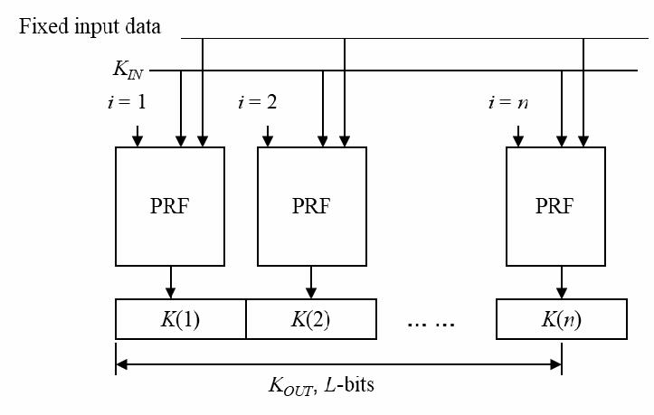
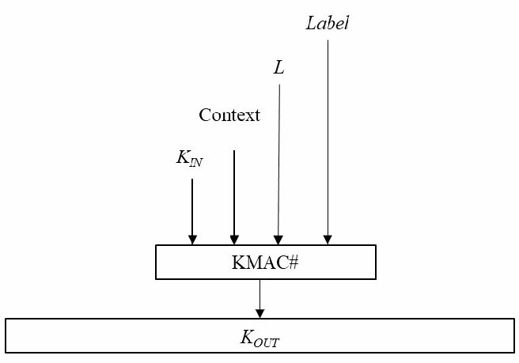
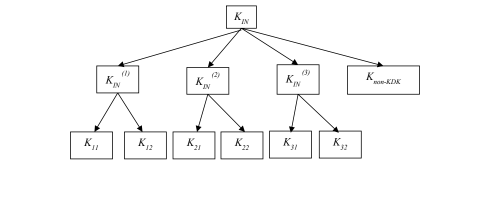

NIST SP 800-108 Rev. 1 (Update 1) 日本語訳
英語タイトル : Recommendation for Key Derivation Using Pseudorandom Functions日本語タイトル : 疑似ランダム関数を用いた鍵導出に関する勧告
公開日 : 2024-02-02
原文URL : https://csrc.nist.gov/pubs/sp/800/108/r1/upd1/final
翻訳編集 : 自動生成（有志による非公式の日本語訳）, 原文取得日 : 2026-09-27, 訳文 : 303 / 303 ブロック
[要約] SP 800-108 Rev. 1 (Update 1) は、鍵確立方式などで共有された秘密鍵から、疑似ランダム関数を用いて追加の鍵素材を導出する技法を規定する勧告です。HMAC、CMAC、KMAC の疑似ランダム関数を用いる鍵導出を扱い、付録で CMAC における鍵制御のセキュリティ上の問題を取り上げるほか、改訂履歴と変更履歴を示します。2024年2月2日までの更新を含み、カウンターモード、フィードバックモード、ダブルパイプラインモードの反復モードによる鍵導出関数と、反復を用いない KMAC による鍵導出関数を規定します。
NIST Special Publication 800 NIST SP 800-108r1-upd1
NIST特別刊行物800 NIST SP 800-108r1-upd1
Recommendation for Key Derivation Using Pseudorandom Functions
疑似ランダム関数を用いる鍵導出に関する推奨事項
Lily Chen
Lily Chen
This publication is available free of charge from: https://doi.org/10.6028/NIST.SP.800-108r1-upd1
本刊行物は https://doi.org/10.6028/NIST.SP.800-108r1-upd1 から無料で入手できる。
NIST Special Publication 800 NIST SP 800-108r1-upd1
NIST特別刊行物800 NIST SP 800-108r1-upd1
Recommendation for Key Derivation Using Pseudorandom Functions
疑似ランダム関数を用いる鍵導出に関する推奨事項
Lily Chen
Lily Chen
Computer Security Division Information Technology Laboratory
コンピュータセキュリティ部門 情報技術研究所
This publication is available free of charge from: https://doi.org/10.6028/NIST.SP.800-108r1-upd1
本刊行物は https://doi.org/10.6028/NIST.SP.800-108r1-upd1 から無料で入手できる。
August 2022
2022年8月
INCLUDES UPDATES AS OF 02-02-2024; SEE APPENDIX E
2024年2月2日までの更新を含む。付録Eを参照。
［米国商務省の紋章。公的な標章のため、この非公式サイトには掲載していない。原本 PDF を参照。］
U.S. Department of Commerce Gina M. Raimondo, Secretary
米国商務省 長官 Gina M. Raimondo
National Institute of Standards and Technology
米国国立標準技術研究所（NIST）
Laurie E. Locascio, NIST Director and Under Secretary of Commerce for Standards and Technology
Laurie E. Locascio、NIST所長兼商務省標準技術担当次官
Certain commercial entities, equipment, or materials may be identified in this document in order to describe an experimental procedure or concept adequately. Such identification is not intended to imply recommendation or endorsement by the National Institute of Standards and Technology (NIST), nor is it intended to imply that the entities, materials, or equipment are necessarily the best available for the purpose.
実験手順または概念を十分に説明するため、この文書で特定の商業事業体、機器、または材料に言及することがある。そのような言及は、米国国立標準技術研究所（NIST）による推奨または支持を意味するものではなく、また、当該事業体、材料、機器が、その目的に利用できるものの中で必ず最良であることを意味するものでもない。
There may be references in this publication to other publications currently under development by NIST in accordance with its assigned statutory responsibilities. The information in this publication, including concepts and methodologies, may be used by federal agencies even before the completion of such companion publications. Thus, until each publication is completed, current requirements, guidelines, and procedures, where they exist, remain operative. For planning and transition purposes, federal agencies may wish to closely follow the development of these new publications by NIST.
NISTが割り当てられた法的責任に従って現在策定中の他の刊行物を、本書で参照する場合がある。本書に含まれる情報（概念および方法論を含む）は、関連刊行物が完成する前であっても連邦機関が利用できる。したがって、各刊行物が完成するまでは、該当する現行の要件、指針、手順が引き続き有効である。計画および移行のため、連邦機関はNISTによるこれらの新しい刊行物の策定状況を注意深く追跡するとよい。
Organizations are encouraged to review all draft publications during public comment periods and provide feedback to NIST. Many NIST cybersecurity publications, other than the ones noted above, are available at https://csrc.nist.gov/publications.
組織には、公開意見募集期間中にすべての草案刊行物を確認し、NISTにフィードバックを提供することが推奨される。上記で言及したものを除き、多くのNISTサイバーセキュリティ刊行物は https://csrc.nist.gov/publications から入手できる。
Authority This publication has been developed by NIST in accordance with its statutory responsibilities under the Federal Information Security Modernization Act (FISMA) of 2014, 44 U.S.C. § 3551 et seq., Public Law (P.L.) 113-283. NIST is responsible for developing information security standards and guidelines, including minimum requirements for federal information systems, but such standards and guidelines shall not apply to national security systems without the express approval of appropriate federal officials exercising policy authority over such systems. This guideline is consistent with the requirements of the Office of Management and Budget (OMB) Circular A-130.
権限 本刊行物は、2014年連邦情報セキュリティ近代化法（FISMA）、合衆国法典第44編§3551以降、Public Law（P.L.）113-283に基づく法定の責任に従ってNISTが策定した。NISTは、連邦情報システムの最低要件を含む情報セキュリティ標準および指針を策定する責任を負う。ただし、これらの標準および指針は、国家安全保障システムに対する政策権限を行使する適切な連邦当局者の明示的な承認がない限り、当該システムには適用されない。本指針は、行政管理予算局（OMB）通達A-130の要件と整合している。
Nothing in this publication should be taken to contradict the standards and guidelines made mandatory and binding on federal agencies by the Secretary of Commerce under statutory authority. Nor should these guidelines be interpreted as altering or superseding the existing authorities of the Secretary of Commerce, Director of the OMB, or any other federal official. This publication may be used by nongovernmental organizations on a voluntary basis and is not subject to copyright in the United States. Attribution would, however, be appreciated by NIST.
本刊行物のいかなる内容も、商務長官が法的権限に基づいて連邦機関に義務付けた標準および指針に反するものと解釈してはならない。また、本指針は、商務長官、OMB長官、その他の連邦当局者の既存の権限を変更または無効にするものと解釈してはならない。本刊行物は、非政府組織が任意で利用でき、米国では著作権の対象とならない。ただし、NISTへの出典表示を歓迎する。
NIST Technical Series Policies Copyright, Fair Use, and Licensing Statements NIST Technical Series Publication Identifier Syntax
NIST技術シリーズの方針／著作権、公正利用およびライセンスに関する声明／NIST技術シリーズ刊行物識別子の構文
Publication History Approved by the NIST Editorial Review Board on 2024-02-01 Supersedes NIST Special Publication 800-108r1 (August 2022) https://doi.org/10.6028/NIST.SP.800-108r1
刊行履歴 NIST編集審査委員会により2024年2月1日に承認。NIST特別刊行物800-108r1（2022年8月）を置き換える。https://doi.org/10.6028/NIST.SP.800-108r1
How to Cite this NIST Technical Series Publication: Chen L (2022) Recommendation for Key Derivation Using Pseudorandom Functions. (National Institute of Standards and Technology, Gaithersburg, MD), NIST Special Publication (SP) NIST SP 800-108r1-upd1, Includes updates as of February 2, 2024. https://doi.org/10.6028/NIST.SP.800-108r1-upd1
NIST技術シリーズ刊行物の引用方法：Chen L（2022）『疑似乱数関数を用いる鍵導出に関する推奨事項』。（米国国立標準技術研究所、メリーランド州ゲイザースバーグ）、NIST特別刊行物（SP）NIST SP 800-108r1-upd1。2024年2月2日までの更新を含む。https://doi.org/10.6028/NIST.SP.800-108r1-upd1
Author ORCID iDs L. Chen: 0000-0003-2726-4279
著者のORCID iD L. Chen：0000-0003-2726-4279
Contact Information
連絡先
sp800-108-comments@nist.gov
sp800-108-comments@nist.gov
National Institute of Standards and Technology Attn: Computer Security Division, Information Technology Laboratory 100 Bureau Drive (Mail Stop 8930) Gaithersburg, MD 20899-8930
米国国立標準技術研究所 宛先：コンピュータセキュリティ部門、情報技術研究所 100 Bureau Drive（Mail Stop 8930） Gaithersburg, MD 20899-8930
All comments are subject to release under the Freedom of Information Act (FOIA).
すべてのコメントは、情報公開法（FOIA）に基づく公開の対象となる。
Abstract
要旨
This Recommendation specifies techniques for the derivation of additional keying material from a secret key – either established through a key-establishment scheme or shared through some other manner – using pseudorandom functions: HMAC, CMAC, and KMAC.
本勧告は、鍵確立方式によって確立された、またはその他の方法で共有された秘密鍵から、HMAC、CMAC、KMACの疑似乱数関数を用いて追加の鍵素材を導出する技法を規定する。
Keywords
キーワード
CMAC; HMAC; key derivation; KMAC; pseudorandom function.
CMAC、HMAC、鍵導出、KMAC、疑似乱数関数。
Reports on Computer Systems Technology
コンピュータシステム技術に関する報告書
The Information Technology Laboratory (ITL) at the National Institute of Standards and Technology (NIST) promotes the U.S. economy and public welfare by providing technical leadership for the Nation’s measurement and standards infrastructure. ITL develops tests, test methods, reference data, proof of concept implementations, and technical analyses to advance the development and productive use of information technology. ITL’s responsibilities include the development of management, administrative, technical, and physical standards and guidelines for the cost-effective security and privacy of other than national security-related information in federal information systems. The Special Publication 800-series reports on ITL’s research, guidelines, and outreach efforts in information system security, and its collaborative activities with industry, government, and academic organizations.
米国国立標準技術研究所（NIST）の情報技術研究所（ITL）は、国の計量・標準基盤に技術的リーダーシップを発揮することで、米国経済と公共の福祉を促進する。ITLは、情報技術の発展と生産的利用を推進するため、試験、試験方法、参照データ、概念実証の実装、技術分析を開発する。ITLは、国家安全保障関連以外の情報について、連邦情報システムにおけるセキュリティとプライバシーを費用対効果よく確保するための管理的、事務的、技術的、物理的な標準および指針の策定を担う。特別刊行物800シリーズは、情報システムセキュリティに関するITLの研究、指針、普及活動、および産業界、政府、学術機関との協力活動を報告する。
Patent Disclosure Notice
特許開示に関する通知
NOTICE: ITL has requested that holders of patent claims whose use may be required for compliance with the guidance or requirements of this publication disclose such patent claims to ITL. However, holders of patents are not obligated to respond to ITL calls for patents and ITL has not undertaken a patent search in order to identify which, if any, patents may apply to this publication. As of the date of publication and following call(s) for the identification of patent claims whose use may be required for compliance with the guidance or requirements of this publication, no such patent claims have been identified to ITL. No representation is made or implied by ITL that licenses are not required to avoid patent infringement in the use of this publication.
通知：本刊行物の指針または要件への準拠に使用が必要となる可能性のある特許請求項について、ITLはその保有者に開示を求めている。ただし、特許保有者はITLによる特許開示要請に応じる義務を負わず、ITLも、本刊行物に適用される可能性のある特許の有無を特定するための特許調査を実施していない。刊行日時点で、本刊行物の指針または要件への準拠に使用が必要となる可能性のある特許請求項の特定を求めた結果、該当する特許請求項はITLに報告されていない。本刊行物の使用において特許侵害を避けるためのライセンスが不要であると、ITLが表明または示唆するものではない。
Table of Contents
目次
Introduction — 1
はじめに — 1
Scope and Purpose — 2
適用範囲と目的 — 2
Pseudorandom Function (PRF) — 3
疑似乱数関数（PRF）— 3
Key-Derivation Function (KDF) — 4
鍵導出関数（KDF）— 4
KDF in Counter Mode — 6
カウンターモードKDF — 6
KDF in Feedback Mode — 8
フィードバックモードKDF — 8
KDF in Double-Pipeline Mode — 9
ダブルパイプラインモードKDF — 9
KDF Using KMAC — 11
KMACを用いるKDF — 11
Key Hierarchy — 13
鍵階層 — 13
Security Considerations — 14
セキュリティに関する考慮事項 — 14
Cryptographic Strength — 14
暗号強度 — 14
The Length of a Key-Derivation Key — 14
鍵導出鍵の長さ — 14
Converting Keying Material to Cryptographic Keys — 15
鍵素材から暗号鍵への変換 — 15
Input Data Encoding — 15
入力データの符号化 — 15
Key Separation — 15
鍵分離 — 15
Context Binding — 16
コンテキストの結び付け — 16
Key Control Security — 17
鍵制御のセキュリティ — 17
References — 18
参考文献 — 18
Appendix A. Revisions — 19
付録A. 改訂内容 — 19
Appendix B. Example of CMAC Key Control Security Issue — 20
付録B. CMACの鍵制御に対する安全性の問題の例 — 20
Appendix C. List of Symbols, Abbreviations, and Acronyms — 22
付録C. 記号、略語、頭字語一覧 — 22
Appendix D. Glossary — 24
付録D. 用語集 — 24
Appendix E. Change Log — 26
付録E. 変更履歴 — 26
List of Figures
図一覧
Fig. 1. KDF in Counter Mode — 7
図1. カウンターモードKDF — 7
Fig. 2. KDF in Feedback Mode — 9
図2. フィードバックモードKDF — 9
Fig. 3. KDF in Double-pipeline Mode — 10
図3. ダブルパイプラインモードKDF — 10
Fig. 4. KDF Using KMAC — 11
図4. KMACを用いるKDF — 11
Fig. 5. Key Hierarchy — 13
図5. 鍵階層 — 13
Acknowledgments
謝辞
The author, Lily Chen of the National Institute of Standards and Technology (NIST) would like to thank her colleagues – Elaine Barker and Meltem Sönmez Turan of NIST and Rich Davis of the National Security Agency – for their helpful discussions and valuable comments. The author also gratefully appreciates the comments received during the call for public comments for this revision and during the development of the previous version of this publication.
著者である米国国立標準技術研究所（NIST）のLily Chenは、有益な議論と貴重なコメントを寄せたNISTの同僚Elaine Barker氏およびMeltem Sönmez Turan氏、米国国家安全保障局（NSA）のRich Davis氏に謝意を表する。また、本改訂版のパブリックコメント募集期間中および本刊行物の前版の策定時に寄せられたコメントにも、深く感謝する。
Introduction
はじめに
When a party obtains a cryptographic key, additional keys will often be needed. There are numerous methods for obtaining the keying material required by approved cryptographic algorithms (see SP 800-133, Rev. 2 [1] for a discussion of the recommended techniques). The requisite keying material is often obtained from the output of a key-derivation function (KDF) that takes a preexisting cryptographic key (and other data) as input. Key-derivation functions are used to derive additional keys from a cryptographic key.
ある当事者が暗号鍵を取得した場合、追加の鍵が必要になることが多い。承認された暗号アルゴリズムが必要とする鍵素材を得る方法は数多くある（推奨される手法の議論は SP 800-133 Rev. 2 [1] を参照）。必要な鍵素材は、既存の暗号鍵（およびその他のデータ）を入力とする鍵導出関数（KDF）の出力から得られることが多い。鍵導出関数は、暗号鍵から追加の鍵を導出するために用いられる。
The key-derivation functions specified in the original edition (2008) of NIST Special Publication (SP) 800-108 used HMAC and CMAC as pseudorandom functions. In Revision 1, a KDF using KMAC is added in Section 4.4.
NIST特別刊行物（SP）800-108の初版（2008年）で規定した鍵導出関数は、疑似ランダム関数としてHMACとCMACを用いていた。改訂第1版では、4.4節にKMACを用いるKDFを追加した。
Scope and Purpose
適用範囲と目的
This Recommendation specifies several families of key-derivation functions that use pseudorandom functions. These key-derivation functions can be used to derive additional keys from an existing cryptographic key that was previously established through an automated key-establishment scheme (e.g., as defined in SP 800-56A [2] and SP 800-56B [3]), previously generated (e.g., using a pseudorandom bit generator as specified in SP 800-90A [4] or a previous instance of key derivation as specified in this Recommendation), and/or previously shared in some other way (e.g., by manual distribution). Effectively, the key-derivation functions specified in this Recommendation provide the key expansion functionality described in SP 800-56C [5], where key derivation is portrayed as a process that potentially requires two separate steps: 1) randomness extraction (to obtain an initial key) and 2) key expansion (to produce additional keys from that initial key and other data).
本勧告は、疑似乱数関数を用いる複数の鍵導出関数群を規定する。これらの鍵導出関数は、自動鍵確立方式（例：[2]のSP 800-56Aおよび[3]のSP 800-56Bに規定）によって以前に確立された暗号鍵、既に生成された暗号鍵（例：[4]のSP 800-90Aに規定する疑似乱数ビット生成器を用いて生成したもの、または本勧告に規定する鍵導出を以前に実行して得たもの）、および／またはその他の方法（例：手動配布）で以前に共有された暗号鍵から、追加の鍵を導出するために使用できる。実質的に、本勧告に規定する鍵導出関数は、SP 800-56C [5]で説明される鍵拡張機能を提供する。同文書では、鍵導出は、場合によっては二つの別個の段階、すなわち1) 初期鍵を得るためのランダム性抽出、2) その初期鍵およびその他のデータから追加の鍵を生成する鍵拡張、を必要とする処理として示されている。
Pseudorandom Function (PRF)
疑似ランダム関数（PRF）
A pseudorandom function (PRF) is the basic building block for constructing a key-derivation function in this Recommendation. Generally, a PRF family \(\{\mathit{PRF}(s, x) \mid s \in S\}\) consists of polynomial-time computable functions with an index (also called a seed) \(s\) and input \(x\), such that when \(s\) is randomly selected from \(S\) and not known to observers, \(\mathit{PRF}(s, x)\) is computationally indistinguishable from a random function defined on the same domain with output to the same range as \(\mathit{PRF}(s, x)\). For a formal definition of a pseudorandom function, refer to [9]. When a cryptographic key \(K_{\mathit{IN}}\) is regarded as the seed, that is, \(s = K_{\mathit{IN}}\), the output of the pseudorandom function can be used as keying material. In Section 4, several families of PRF-based key-derivation functions are defined without describing the internal structure of the PRF. For key derivation, this Recommendation approves the use of the keyed-Hash Message Authentication Code (HMAC) specified in [7], the Cipher-based Message Authentication Code (CMAC) specified in [6], and the Keccak-based Message Authentication Code (KMAC) specified in [8] as pseudorandom functions. For a given KDF using HMAC, CMAC, or KMAC, the key \(K_{\mathit{IN}}\) is assumed to be computationally indistinguishable from one that has been selected uniformly at random from the set of all the bit strings with a length of \(|K_{\mathit{IN}}|\).
疑似乱数関数（PRF）は、本勧告における鍵導出関数を構成するための基本的な構成要素である。一般に、PRF族 \(\{\mathit{PRF}(s, x) \mid s \in S\}\) は、添字（シードとも呼ばれる）\(s\) と入力 \(x\) を持つ多項式時間で計算可能な関数から成る。\(s\) が \(S\) からランダムに選択され、観測者に知られていない場合、\(\mathit{PRF}(s, x)\) は、同じ定義域上で定義され、\(\mathit{PRF}(s, x)\) と同じ値域に出力するランダム関数と計算量的に識別不能である。疑似乱数関数の形式的な定義については[9]を参照されたい。暗号鍵 \(K_{\mathit{IN}}\) をシードとみなす、すなわち \(s = K_{\mathit{IN}}\) とすると、疑似乱数関数の出力を鍵素材として使用できる。第4節では、PRFに基づく複数の鍵導出関数族を、PRFの内部構造を記述せずに定義する。鍵導出において、本勧告は、[7]に規定する鍵付きハッシュメッセージ認証コード（HMAC）、[6]に規定する暗号方式ベースのメッセージ認証コード（CMAC）、および[8]に規定するKeccakベースのメッセージ認証コード（KMAC）を疑似乱数関数として使用することを承認する。HMAC、CMAC、またはKMACを用いる所与のKDFでは、鍵 \(K_{\mathit{IN}}\) は、長さ \(|K_{\mathit{IN}}|\) のすべてのビット列の集合から一様ランダムに選択された鍵と計算量的に識別不能であると仮定する。
When selecting the PRF to be used by a key-derivation function, consider using HMAC or KMAC rather than CMAC, unless, for example, AES is the only primitive implemented in the platform or using CMAC has a resource benefit. When CMAC is used as the PRF, a party with knowledge of the key-derivation key and the freedom to choose a sufficient number of input bits may be able to force one or more derived blocks of keying material to predetermined values. Mitigations are provided to guard against this type of key control in cases where CMAC is used as the PRF when implementing a KDF as specified in this Recommendation (see Sections 4.1, 4.2, 4.3, and 6.7).
鍵導出関数に用いるPRFを選択する際は、たとえばAESがプラットフォームに実装された唯一のプリミティブである場合、またはCMACを使うことでリソース上の利点が得られる場合を除き、CMACよりHMACまたはKMACを使用することを検討すべきである。CMACをPRFとして使用する場合、鍵導出鍵を知り、十分な数の入力ビットを選択できる者は、鍵素材の導出ブロックの一つ以上を所定の値に強制できる可能性がある。本勧告に規定するKDFを実装する際にCMACをPRFとして使用する場合、この種の鍵制御を防ぐための緩和策が示されている（第4.1節、第4.2節、第4.3節、および第6.7節を参照）。
Key-Derivation Function (KDF)
鍵導出関数（KDF）
This section defines several families of key-derivation functions (KDFs) that use PRFs. For the purposes of this Recommendation, a KDF is a function that – given input consisting of a (secret) key and other data – is used to generate (i.e., derive) keying material that can be employed by cryptographic algorithms. In other words, the KDFs specified here provide a key-expansion capability (as noted in Section 2).
Depending on the intended length of the keying material to be derived, the KDF may require multiple invocations of the PRF used in its construction. A method for iterating the multiple invocations is called a mode of iteration. In this Recommendation, a counter mode, a feedback mode, and a double-pipeline mode are specified in Sections 4.1, 4.2, and 4.3, respectively, as iteration modes.
In addition to these iteration modes, this Recommendation specifies a KDF using KMAC in Section 4.4. KMAC can output keying material that has the required length without iteration.
The key that is input to a key-derivation function is called a key-derivation key (KDK). To comply with this Recommendation, a KDK shall be a cryptographic key (see Appendix D). The KDK used as an input to one of the key-derivation functions specified in this Recommendation can, for example, be generated by an approved cryptographic random bit generator (e.g., by a deterministic random bit generator of the type specified in [4]) and manually distributed, or it could be obtained from the output of an approved automated key-establishment scheme (e.g., as defined in [2] and [3]). The KDK can be a portion of the keying material derived from another KDK.
本節では、PRFを用いる複数の鍵導出関数（KDF）族を定義する。本勧告においてKDFとは、（秘密）鍵とその他のデータから成る入力を受け取り、暗号アルゴリズムで利用できる鍵素材を生成（すなわち導出）するために用いる関数である。言い換えると、ここに規定するKDFは、（第2節で述べたとおり）鍵拡張機能を提供する。
導出する鍵素材の所期の長さによっては、KDFは、その構成に用いるPRFを複数回呼び出す必要が生じることがある。複数回の呼び出しを反復する方法を反復モードと呼ぶ。本勧告では、カウンタモード、フィードバックモード、および二重パイプラインモードを、それぞれ第4.1節、第4.2節、および第4.3節で反復モードとして規定する。
これらの反復モードに加え、本勧告は第4.4節でKMACを用いるKDFを規定する。KMACは、反復せずに必要な長さの鍵素材を出力できる。
鍵導出関数に入力する鍵を鍵導出鍵（KDK）と呼ぶ。本勧告に準拠するには、KDKは暗号鍵でなければならない（付録Dを参照）。本勧告に規定する鍵導出関数のいずれかへの入力として使用するKDKは、例えば、承認された暗号学的ランダムビット生成器（例：[4]に規定する種類の決定論的ランダムビット生成器）で生成して手動で配布することができる。また、承認された自動鍵確立方式（例：[2]および[3]に定義されたもの）の出力から得ることもできる。KDKは、別のKDKから導出された鍵素材の一部であってもよい。
Note that the key-derivation methods employed as components of key-agreement schemes (as described in [2], [3], and [5]) include two-step methods in which the first step consists of extracting a KDK from a shared secret precursor. These extracted KDKs are not part of the output of a key-agreement scheme. They are only used to derive output keying material during a single execution of a scheme and then destroyed (along with all other sensitive, locally stored data associated with that particular execution).
なお、鍵合意方式の構成要素として用いられる鍵導出方法（[2]、[3]、[5]に記載）には、第1段階で前駆体となる共有シークレットからKDKを抽出する2段階の方法が含まれる。これらの抽出されたKDKは、鍵合意方式の出力には含まれない。KDKは、方式の1回の実行中に出力鍵素材を導出するためだけに用いられ、その後（当該実行に関連してローカルに保存されたその他すべての機微なデータとともに）破棄される。
In keeping with the usual terminology, the output of a key-derivation function is called the derived keying material and may subsequently be segmented into multiple keys. Any disjoint segments of the derived keying material (with the required lengths) can be used as cryptographic keys for the intended algorithms. Two different key-establishment scenarios may use the KDF: one in which multiple parties share the same key-derivation key and are able to separately derive the same keying material, and the other in which one entity derives keying material using a key-derivation key known only to itself and distributes the derived keying material to other entities. When multiple parties share the same key-derivation key, the cryptographic application employing a KDF must define the way to convert (i.e., parse) the keying material into different keys. For example, when 256 bits of keying material are derived, the application may specify that the first 128 bits will be used as a key for a message authentication code and that the second 128 bits will be used as an encryption key for a given encryption algorithm. In the case where a single party derives the keying material, a re-derivation can produce the same keys (when required).
通常の用語法に従い、鍵導出関数の出力は導出鍵素材と呼ばれ、その後、複数の鍵に分割される場合がある。導出鍵素材の互いに重ならない任意の部分（必要な長さを持つもの）を、意図するアルゴリズムの暗号鍵として使用できる。KDFを利用できる鍵確立のシナリオは2つある。1つは、複数の当事者が同じ鍵導出鍵を共有し、それぞれが別個に同じ鍵素材を導出できる場合である。もう1つは、あるエンティティが自身だけが知る鍵導出鍵を用いて鍵素材を導出し、導出した鍵素材を他のエンティティへ配布する場合である。複数の当事者が同じ鍵導出鍵を共有する場合、KDFを用いる暗号アプリケーションは、鍵素材を複数の鍵に変換（すなわち、解析）する方法を定めなければならない。例えば、256ビットの鍵素材が導出される場合、アプリケーションは、最初の128ビットをメッセージ認証コードの鍵として使用し、2番目の128ビットを特定の暗号化アルゴリズムの暗号化鍵として使用するよう指定してもよい。単一の当事者が鍵素材を導出する場合は、再導出によって同じ鍵が得られる（必要な場合）。
To define key-derivation functions, the following notations are used. Some of the notations have been defined in Appendix C, but definitions are included here for easy reference.
鍵導出関数を定義するため、以下の表記法を用いる。一部の表記法は付録Cで定義しているが、参照しやすいよう、ここにも定義を示す。
1. \(K_{\mathit{IN}}\) – Key-derivation key; a key that is used as an input to a key-derivation function (along with other input data) to derive keying material. When HMAC is used as the PRF, \(K_{\mathit{IN}}\) is used as the HMAC key, and the other input data is used as the value of \(\mathit{text}\), as defined in [7]. When CMAC is used as the PRF, \(K_{\mathit{IN}}\) is used as the block cipher key, and the other input data is used as the message \(M\), as defined in [6]. When KMAC is used as the PRF, \(K_{\mathit{IN}}\) is used as the KMAC key, and the other input data is used as the main input string \(X\), as defined in [8].
1. \(K_{\mathit{IN}}\) – 鍵導出鍵。鍵素材を導出するため、（他の入力データとともに）鍵導出関数への入力として使用する鍵である。HMACをPRFとして用いる場合、\(K_{\mathit{IN}}\) はHMAC鍵として使用し、その他の入力データは[7]に規定する \(\mathit{text}\) の値として使用する。CMACをPRFとして用いる場合、\(K_{\mathit{IN}}\) はブロック暗号鍵として使用し、その他の入力データは[6]に規定するメッセージ \(M\) として使用する。KMACをPRFとして用いる場合、\(K_{\mathit{IN}}\) はKMAC鍵として使用し、その他の入力データは[8]に規定する主入力文字列 \(X\) として使用する。
2. \(K_{\mathit{OUT}}\) – Keying material that is output from a key-derivation function specified in this Recommendation; a bit string of the required length that is derived using a key-derivation key (and other data).
2. \(K_{\mathit{OUT}}\) – 本勧告に規定する鍵導出関数から出力される鍵素材。鍵導出鍵（およびその他のデータ）を用いて導出される、所要の長さのビット列である。
3. \(\mathit{Label}\) – A string that identifies the purpose for the derived keying material, which is encoded as a bit string. The encoding method for the \(\mathit{Label}\) is defined in a larger context, for example, in the protocol that uses a KDF.
3. \(\mathit{Label}\) – 導出鍵素材の用途を識別する文字列であり、ビット列として符号化される。\(\mathit{Label}\) の符号化方式は、例えばKDFを使用するプロトコルなど、より大きな文脈の中で定義される。
4. \(\mathit{Context}\) – A bit string containing the information related to the derived keying material. It may include the identities of the parties who are deriving and/or using the derived keying material and, optionally, a nonce known by the parties who derive the keys.
4. \(\mathit{Context}\) – 導出鍵素材に関連する情報を含むビット列。導出鍵素材を導出および／または使用する当事者の識別情報を含めてもよく、また、鍵を導出する当事者が知っているノンスを任意で含めてもよい。
5. \(\mathit{IV}\) – A bit string that is used as an initial value in computing the first iteration in the feedback mode. It can be either public or secret. It may be an empty string. The length for an IV should be specified by the application or protocol using the key-derivation function.
5. \(\mathit{IV}\) – フィードバックモードの最初の反復を計算する際に初期値として使用するビット列。公開情報でも秘密情報でもよい。空文字列でもよい。IVの長さは、鍵導出関数を使用するアプリケーションまたはプロトコルが指定すべきである。
6. \(L\) – An integer specifying the requested length (in bits) of the derived keying material \(K_{\mathit{OUT}}\). \(L\) is represented as a bit string when it is an input to a key-derivation function. The length of the bit string is specified by the encoding method for the input data.
6. \(L\) – 導出鍵素材 \(K_{\mathit{OUT}}\) に要求される長さ（ビット単位）を指定する整数。\(L\) は、鍵導出関数への入力である場合、ビット列として表現される。そのビット列の長さは、入力データの符号化方式で指定される。
7. \(h\) – An integer that indicates the length (in bits) of the output of a single invocation of the PRF.
7. \(h\) – PRFを1回呼び出したときの出力の長さ（ビット単位）を示す整数。
8. \(n\) – An integer whose value is the number of iterations of the PRF needed to generate \(L\) bits of keying material.
8. \(n\) – \(L\) ビットの鍵素材を生成するために必要なPRFの反復回数を値とする整数。
9. \(i\) – A counter taking integer values in the interval \([1, 2^r - 1]\) that is encoded as a bit string of length \(r\); used as an input to each invocation of a PRF in the counter mode and (optionally) in the feedback and double-pipeline iteration modes.
9. \(i\) – 区間 \([1, 2^r - 1]\) の整数値を取り、長さ \(r\) のビット列として符号化されるカウンタ。カウンタモード、および（任意で）フィードバックモードと二重パイプライン反復モードにおいて、PRFの各呼び出しへの入力として用いる。
10. \(r\) – An integer (\(1 \le r \le 32\)) that indicates the length of the binary encoding of the counter \(i\) as an integer in the interval \([1, 2^r - 1]\).
10. \(r\) – 整数（\(1 \le r \le 32\)）であり、カウンタ \(i\) を区間 \([1, 2^r - 1]\) の整数として2進符号化したときの長さを示す。
11. \(\{X\}\) – Used to indicate that the data \(X\) is an optional input to the key-derivation function.
11. \(\{X\}\) – データ \(X\) が鍵導出関数への任意入力であることを示すために用いる。
12. \(0x00\) – An all-zero octet; an optional data field that is used to indicate a separation of different variable-length data fields.2
12. \(0x00\) — すべてゼロのオクテット。長さが可変の異なるデータ項目の区切りを示す任意のデータ項目。2
When KMAC is used as the PRF in a key derivation function as in Section 4.4, the required \(L\) bits of keying material are derived in a single invocation of the PRF, while for a PRF with an output length of \(h\) bits – as in Sections 4.1, 4.2, and 4.3 – the key-derivation function invokes the PRF \(n\) times, concatenating the outputs until at least \(L\) bits of keying material are derived; this requires \(n = \lceil L/h \rceil\). When using the counter mode, \(n\) shall not be larger than \(2^r - 1\), where \(1 \le r \le 32\) is the length of the binary representations of the counter values. This ensures that the counter values are distinct, which is necessary to prevent a PRF used in counter mode from generating the same output. For the feedback mode and the double-pipeline iteration mode, a repeat in the counter value (if a counter is used at all) will not be sufficient to cause the iterated PRF to repeat an output value. Nevertheless, for compliance with this Recommendation, \(n\) shall not be larger than \(2^{32} - 1\) when using the feedback mode or the double-pipeline iteration mode; \(L = (2^{32} - 1) h\) bits of keying material is more than enough for most applications. Regardless of the mode, a particular implementation of a KDF or an application that uses a KDF can impose a smaller bound on the maximum value of \(n\) (the number of PRF iterations) than those imposed in this Recommendation. For each of the iterations of the PRF, the key-derivation key \(K_{\mathit{IN}}\) is used as the key, and the input
第4.4節のようにKMACを鍵導出関数のPRFとして用いる場合、必要な \(L\) ビットの鍵素材はPRFの1回の呼び出しで導出される。一方、第4.1節、第4.2節、および第4.3節のように出力長が \(h\) ビットのPRFを用いる場合、鍵導出関数はPRFを \(n\) 回呼び出し、少なくとも \(L\) ビットの鍵素材が導出されるまで出力を連結する。このため、\(n = \lceil L/h \rceil\) が必要である。カウンタモードを使用する場合、\(n\) は \(2^r - 1\) を超えてはならない。ここで \(1 \le r \le 32\) はカウンタ値の2進表現の長さである。これによりカウンタ値が互いに異なることが保証される。これは、カウンタモードで使用するPRFが同じ出力を生成するのを防ぐために必要である。フィードバックモードおよび二重パイプライン反復モードでは、カウンタ値が繰り返されても（そもそもカウンタを使用する場合）、反復されるPRFが出力値を繰り返す原因としては十分でない。それでも本勧告に準拠するため、フィードバックモードまたは二重パイプライン反復モードを使用する場合、\(n\) は \(2^{32} - 1\) を超えてはならない。\(L = (2^{32} - 1) h\) ビットの鍵素材は、ほとんどのアプリケーションに十分すぎる長さである。モードにかかわらず、KDFの特定の実装またはKDFを使用するアプリケーションは、\(n\)（PRFの反復回数）の最大値に、本勧告が課す上限より小さい上限を課すことができる。PRFを反復するたびに、鍵導出鍵 \(K_{\mathit{IN}}\) は鍵として使用され、入力
data consists of some iteration-dependent input data and a string of fixed input data. Depending on the mode of iteration, the iteration-dependent input data could be a counter, the output of the PRF from the previous iteration, a combination of both, or an output from the first pipeline iteration (in the case of the double-pipeline iteration mode). In the following key-derivation functions, the fixed input data is a concatenation of a \(\mathit{Label}\), a separation indicator \(0x00\), the \(\mathit{Context}\), and \([L]_2\). One or more of these fixed input data fields may be omitted unless required
データは、反復に依存する入力データと固定入力データ列から成る。反復モードに応じ、反復依存入力データは、カウンタ、前回の反復におけるPRF出力、その両方の組合せ、または最初のパイプライン反復の出力（二重パイプライン反復モードの場合）となり得る。以下の鍵導出関数では、固定入力データは \(\mathit{Label}\)、区切り標識 \(0x00\)、\(\mathit{Context}\)、および \([L]_2\)
for certain purposes, as discussed in Section 6.5 and Section 6.6. The length for each data field and their order shall be defined unambiguously. For example, the length and the order may be defined as part of a KDF specification or by the protocol where the KDF is used. In each of the following sections, a specific order for the feedback value, the counter, the \(\mathit{Label}\), the separation indicator \(0x00\), the \(\mathit{Context}\), and \([L]_2\) is used, assuming that
を連結したものである。これら固定入力データ項目の1つ以上は、第6.5節および第6.6節で説明する特定の目的に必要な場合を除き、省略してもよい。各データ項目の長さとその順序は、曖昧さがないよう定義しなければならない。例えば、長さと順序はKDFの仕様の一部として、またはKDFを使用するプロトコルで定義してもよい。以下の各節では、フィードバック値、カウンタ、\(\mathit{Label}\)、区切り標識 \(0x00\)、\(\mathit{Context}\)、および \([L]_2\)
each of them is represented with a specific length. This Recommendation specifies several families of KDFs. Alternative orders for the input data fields may be used for different KDFs.
それぞれが所定の長さで表現される。本勧告は複数のKDF族を規定する。異なるKDFでは入力データ項目の別の順序を使用してもよい。
KDF in Counter Mode
カウンタモードのKDF
This section specifies a family of KDFs that employs a counter mode. In the counter mode, the output of the PRF is computed with a counter as the iteration-dependent input data. The mode is defined as follows. Parameters:
本節では、カウンタモードを用いるKDF族を規定する。カウンタモードでは、PRFの出力を計算する際に、反復依存入力データとしてカウンタを使用する。このモードを以下に定義する。パラメータ：
• \(h\) – The length of the output of a single invocation of the PRF in bits
• \(h\) — PRFを1回呼び出したときの出力長（ビット単位）
• \(r\) – The length of the binary representation of the counter \(i\)
• \(r\) — カウンタ \(i\) の2進表現の長さ
Input: \(K_{\mathit{IN}}\), \(\mathit{Label}\), \(\mathit{Context}\), and \(L\)
入力：\(K_{\mathit{IN}}\)、\(\mathit{Label}\)、\(\mathit{Context}\)、および \(L\)
Process:
処理：
1. \(n := \lceil L/h \rceil\).
1. \(n := \lceil L/h \rceil\)。
2. If \(n > 2^r - 1\), then output an error indicator and stop (i.e., skip steps 3, 4, and 5).
2. \(n > 2^r - 1\) の場合、エラー標識を出力して停止する（すなわち、ステップ3、4、および5を省略する）。
3. \(\mathit{result} := \varnothing\).
3. \(\mathit{result} := \varnothing\)。
4. For \(i = 1\) to \(n\), do
4. \(i = 1\) から \(n\) まで、次を実行する。
a. \(K(i) := \mathit{PRF}(K_{\mathit{IN}}, [i]_2 \parallel \mathit{Label} \parallel 0x00 \parallel \mathit{Context} \parallel [L]_2)\),
a. \(K(i) := \mathit{PRF}(K_{\mathit{IN}}, [i]_2 \parallel \mathit{Label} \parallel 0x00 \parallel \mathit{Context} \parallel [L]_2)\)、
b. \(\mathit{result} := \mathit{result} \parallel K(i)\).
b. \(\mathit{result} := \mathit{result} \parallel K(i)\)。
5. \(K_{\mathit{OUT}} :=\) the leftmost \(L\) bits of \(\mathit{result}\).
5. \(K_{\mathit{OUT}} :=\) \(\mathit{result}\) の左端から \(L\) ビット。
Output: \(K_{\mathit{OUT}}\) (or an error indicator) In each iteration of a PRF execution in step 4 above, the fixed input data is the string \(\mathit{Label} \parallel 0x00 \parallel \mathit{Context} \parallel [L]_2\). The counter \([i]_2\) is the iteration-dependent input data and is represented as a string of \(r\) bits. The KDF in counter mode is illustrated in Fig. 1.
出力：\(K_{\mathit{OUT}}\)（またはエラー標識） 上記ステップ4のPRF実行における各反復で、固定入力データは文字列 \(\mathit{Label} \parallel 0x00 \parallel \mathit{Context} \parallel [L]_2\) である。カウンタ \([i]_2\) は反復依存入力データであり、\(r\) ビットの列として表される。カウンタモードのKDFを図1に示す。

図1 カウンターモードのKDF。上部に2本の横線があり、「Fixed input data」（固定入力データ）とその下の K_IN である。i = 1、i = 2、および間を空けて i = n の3つのPRFの箱がある。各PRFの箱には、カウンタ値 i、K_IN、固定入力データの3本の矢印が上から入る。各PRFの箱からの出力は下向きの矢印でそれぞれ K(1)、K(2)、K(n) の区画に入り、K(2) と K(n) の間には「… …」がある。区画の下の両矢印には「K_OUT, L-bits」（K_OUT、Lビット）とある。
Fig. 1. KDF in Counter Mode
図1 カウンターモードのKDF
When using CMAC as the PRF in counter mode, a party with knowledge of the key \(K_{\mathit{IN}}\), who also can freely select portions of the string \(\mathit{Label} \parallel 0x00 \parallel \mathit{Context} \parallel [L]_2\) (as described in Appendix B), may be able to control the values of one or more of the \(K(i)\). One way to guard against the possibility of this sort of key control would be by replacing the fixed input data
CMACをカウンタモードでPRFとして用いる場合、鍵 \(K_{\mathit{IN}}\) を知っており、かつ文字列 \(\mathit{Label} \parallel 0x00 \parallel \mathit{Context} \parallel [L]_2\) の一部を自由に選択できる者は（付録Bで説明するように）、\(K(i)\) の1つ以上の値を制御できる可能性がある。この種の鍵制御の可能性を防ぐ一つの方法は、固定入力データ
with
ここで、
where
ここで、
That is,
すなわち、
KDF in Feedback Mode
フィードバックモードのKDF
This section specifies a family of KDFs that employs a feedback mode. In the feedback mode, the output of the PRF is computed using iteration-dependent input data that consists of the result of the previous iteration and, optionally, a counter. The mode is defined as follows. (Note that when \(L \le h\), \(\mathit{IV} = \varnothing\), and the counter is used, the feedback mode will generate an output that is identical to the output of the counter mode specified in Section 4.1.) Parameters:
本節では、フィードバックモードを用いるKDF族を規定する。フィードバックモードでは、PRFの出力は、前回の反復の結果と、任意でカウンタとから成る反復依存入力データを用いて計算される。このモードを以下に定義する。（\(L \le h\)、\(\mathit{IV} = \varnothing\) で、かつカウンタを使用する場合、フィードバックモードは第4.1節で規定するカウンタモードの出力と同一の出力を生成することに留意されたい。）パラメータ：
• \(h\) – The length of the output of a single invocation of the PRF in bits
• \(h\) – PRFを1回呼び出したときの出力の長さ（ビット単位）
• \(r\) – The length of the binary representation of the counter \(i\). \(r\) is specified only when a counter is used as an input
• \(r\) – カウンタ \(i\) の2進表現の長さ。\(r\) は、カウンタを入力として使用する場合に限り指定する
Input: \(K_{\mathit{IN}}\), \(\mathit{Label}\), \(\mathit{Context}\), \(\mathit{IV}\), and \(L\)
入力：\(K_{\mathit{IN}}\)、\(\mathit{Label}\)、\(\mathit{Context}\)、\(\mathit{IV}\)、および \(L\)
Process:
処理：
1. \(n := \lceil L/h \rceil\).
1. \(n := \lceil L/h \rceil\)。
2. If \(n > 2^{32} - 1\), output an error indicator and stop (i.e., skip steps 3, 4, and 5).
2. \(n > 2^{32} - 1\) の場合、エラー標識を出力して停止する（すなわち、ステップ3、4、および5を省略する）。
3. \(\mathit{result} := \varnothing\) and \(K(0) := \mathit{IV}\).
3. \(\mathit{result} := \varnothing\) かつ \(K(0) := \mathit{IV}\)。
4. For \(i = 1\) to \(n\), do
4. \(i = 1\) から \(n\) まで、次を実行する。
a. \(K(i) := \mathrm{PRF}(K_{\mathit{IN}}, K(i-1) \{\parallel [i]_2\} \parallel \mathit{Label} \parallel \mathrm{0x00} \parallel \mathit{Context} \parallel [L]_2)\).
a. \(K(i) := \mathrm{PRF}(K_{\mathit{IN}}, K(i-1) \{\parallel [i]_2\} \parallel \mathit{Label} \parallel \mathrm{0x00} \parallel \mathit{Context} \parallel [L]_2)\)。
b. \(\mathit{result} := \mathit{result} \parallel K(i)\).
b. \(\mathit{result} := \mathit{result} \parallel K(i)\)。
5. \(K_{\mathit{OUT}}\) := the leftmost \(L\) bits of \(\mathit{result}\).
5. \(K_{\mathit{OUT}}\) := 左端の \(L\) ビットを \(\mathit{result}\) から取り出したもの。
Output: \(K_{\mathit{OUT}}\) (or an error indicator)
出力：\(K_{\mathit{OUT}}\)（またはエラー標識）
In each iteration of a PRF execution in step 4 above, the fixed input data is the string \(\mathit{Label} \parallel \mathrm{0x00} \parallel \mathit{Context} \parallel [L]_2\). The iteration-dependent input data is \(K(i-1) \{\parallel [i]_2\}\). The KDF in feedback mode is illustrated in Fig. 2.
上記のステップ4におけるPRF実行の各反復で、固定入力データは文字列 \(\mathit{Label} \parallel \mathrm{0x00} \parallel \mathit{Context} \parallel [L]_2\) である。反復依存入力データは \(K(i-1) \{\parallel [i]_2\}\) である。フィードバックモードのKDFを図2に示す。
![Fig. 2. KDF in Feedback Mode. Two horizontal lines run across the top: “Fixed input data” and K_IN. Three PRF boxes are shown, the third after a gap. The first PRF box receives “K(0) = IV”, the optional counter “{i = 1}”, K_IN and the fixed input data. Its output goes down to block K(1) and is also fed back by a line into the second PRF box, which likewise receives “{i = 2}”, K_IN and the fixed input data and outputs to K(2); the output of the second box is fed on toward the next iteration (an arrow ending in the gap). The last PRF box receives the fed-back value from the previous iteration, “{i = n}”, K_IN and the fixed input data, and outputs to K(n). “… …” separates K(2) and K(n). A double-headed arrow below the blocks is labeled “K_OUT, L-bits”.](assets/108r1upd1/p0017-figure-02.png)
図2. フィードバックモードのKDF。上部に2本の横線があり、「Fixed input data」（固定入力データ）と K_IN である。3つのPRFの箱があり、3つ目は間を空けて置かれている。1つ目のPRFの箱には「K(0) = IV」、省略可能なカウンタ「{i = 1}」、K_IN、固定入力データが入る。その出力は下の区画 K(1) に入るとともに、線で2つ目のPRFの箱へ戻される。2つ目の箱も同様に「{i = 2}」、K_IN、固定入力データを受けて K(2) へ出力し、その出力は次の反復へ送られる（間の空白で終わる矢印）。最後のPRFの箱は、前の反復から戻された値、「{i = n}」、K_IN、固定入力データを受けて K(n) へ出力する。K(2) と K(n) の間には「… …」がある。区画の下の両矢印には「K_OUT, L-bits」（K_OUT、Lビット）とある。
Fig. 2. KDF in Feedback Mode
図2. フィードバックモードのKDF
When using CMAC as the PRF in feedback mode, a party with knowledge of the key \(K_{\mathit{IN}}\), who can also freely select portions of the string \(\mathit{Label} \parallel \mathrm{0x00} \parallel \mathit{Context} \parallel [L]_2\) and/or portions of the \(\mathit{IV}\), may be able to control the values of one or more of the \(K(i)\), as was the case for counter mode. One way to guard against the possibility of this sort of key control would be by requiring that
フィードバックモードでCMACをPRFとして用いる場合、鍵 \(K_{\mathit{IN}}\) を知っており、さらに文字列 \(\mathit{Label} \parallel \mathrm{0x00} \parallel \mathit{Context} \parallel [L]_2\) の一部および／または \(\mathit{IV}\) の一部を自由に選択できる者は、カウンタモードの場合と同様に、\(K(i)\) のうち1つ以上の値を制御できる可能性がある。この種の鍵制御の可能性を防ぐ方法の一つは、次を要求することである。
and requiring the inclusion of a counter in the feedback mode (i.e., \([i]_2\) is not optional).
あわせて、フィードバックモードでカウンタを含めることを要求する（すなわち、\([i]_2\) は省略可能ではない）。
KDF in Double-Pipeline Mode
二重パイプラインモードのKDF
For a KDF in the counter mode or feedback mode, the invocation of a PRF is iterated in a single pipeline. This section specifies a family of KDFs in which the invocation of a PRF is iterated in two pipelines. In the first iteration pipeline, a sequence of secret values \(A(i)\) is generated, each of which is used as an input to a corresponding PRF invocation in the second iteration pipeline. Parameters:
カウンタモードまたはフィードバックモードのKDFでは、PRFの呼び出しを単一のパイプラインで反復する。本節では、PRFの呼び出しを二つのパイプラインで反復するKDF族を規定する。第1の反復パイプラインでは、秘密値 \(A(i)\) の列を生成し、その各値を第2の反復パイプラインにおける対応するPRF呼び出しの入力として用いる。パラメータ：
• \(h\) – The length of the output of a single invocation of the PRF in bits
• \(h\) — PRFを1回呼び出したときの出力長（ビット単位）
• \(r\) – The length of the binary representation of the counter \(i\). \(r\) is specified only when a counter is used as an input
• \(r\) — カウンタ \(i\) の2進表現の長さ。\(r\) は、カウンタを入力として使用する場合に限り指定する
Input: \(K_{\mathit{IN}}\), \(\mathit{Label}\), \(\mathit{Context}\), and \(L\)
入力：\(K_{\mathit{IN}}\)、\(\mathit{Label}\)、\(\mathit{Context}\)、および \(L\)
Process:
処理：
1. \(n := \lceil L/h \rceil\).
1. \(n := \lceil L/h \rceil\)。
2. If \(n > 2^{32} - 1\), output an error indicator and stop (i.e., skip steps 3, 4, 5, and 6).
2. \(n > 2^{32} - 1\) の場合、エラー標識を出力して停止する（すなわち、ステップ3、4、5、および6を省略する）。
3. \(\mathit{result} := \varnothing\).
3. \(\mathit{result} := \varnothing\)。
4. \(A(0) := \mathit{Label} \parallel \mathrm{0x00} \parallel \mathit{Context} \parallel [L]_2\).
4. \(A(0) := \mathit{Label} \parallel \mathrm{0x00} \parallel \mathit{Context} \parallel [L]_2\)。
5. For \(i = 1\) to \(n\), do
5. \(i = 1\) から \(n\) まで、次を実行する
a. \(A(i) := \mathrm{PRF}(K_{\mathit{IN}}, A(i-1))\).
a. \(A(i) := \mathrm{PRF}(K_{\mathit{IN}}, A(i-1))\)。
b. \(K(i) := \mathrm{PRF}(K_{\mathit{IN}}, A(i) \{\parallel [i]_2\} \parallel \mathit{Label} \parallel \mathrm{0x00} \parallel \mathit{Context} \parallel [L]_2)\).
b. \(K(i) := \mathrm{PRF}(K_{\mathit{IN}}, A(i) \{\parallel [i]_2\} \parallel \mathit{Label} \parallel \mathrm{0x00} \parallel \mathit{Context} \parallel [L]_2)\)。
c. \(\mathit{result} := \mathit{result} \parallel K(i)\).
c. \(\mathit{result} := \mathit{result} \parallel K(i)\)。
6. \(K_{\mathit{OUT}}\) := the leftmost \(L\) bits of \(\mathit{result}\).
6. \(K_{\mathit{OUT}}\) := 左端の \(L\) ビット（\(\mathit{result}\) のうち）。
Output: \(K_{\mathit{OUT}}\) (or an error indicator)
出力：\(K_{\mathit{OUT}}\)（またはエラー標識）
The PRF iterations in the first pipeline use a feedback mode with key \(K_{\mathit{IN}}\) and an initial value of \(A(0) = \mathit{Label} \parallel \mathrm{0x00} \parallel \mathit{Context} \parallel [L]_2\). Each PRF iteration in the second pipeline generates \(K(i)\) from \(K_{\mathit{IN}}\) and fixed input data while using \(A(i)\) and, optionally, a counter \([i]_2\) as the iteration-dependent input data. The KDF in the double-pipeline iteration mode is illustrated in Fig. 3.
第1パイプラインのPRF反復では、鍵 \(K_{\mathit{IN}}\) と初期値 \(A(0) = \mathit{Label} \parallel \mathrm{0x00} \parallel \mathit{Context} \parallel [L]_2\) を用いるフィードバックモードを使用する。第2パイプラインの各PRF反復では、\(K(i)\) を \(K_{\mathit{IN}}\) および固定入力データから生成し、その際に \(A(i)\) と、任意で、カウンタ \([i]_2\) を反復依存の入力データとして用いる。二重パイプライン反復モードのKDFを図3に示す。
When using CMAC as the PRF in double-pipeline mode, a party with knowledge of the key \(K_{\mathit{IN}}\) may be able to control the values of one or more of the \(K(i)\). One way to guard against the possibility of this sort of key control would be by requiring the inclusion of a counter in double-pipeline mode (i.e., \([i]_2\) is not optional).
二重パイプラインモードでCMACをPRFとして用いる場合、鍵 \(K_{\mathit{IN}}\) を知る者は、\(K(i)\) の1つ以上の値を制御できる可能性がある。この種の鍵制御の可能性を防ぐ一つの方法は、二重パイプラインモードでカウンタを含めることを要求することである（すなわち、\([i]_2\) を省略可能としない）。
![Fig. 3. KDF in Double-pipeline Mode. Upper pipeline: a K_IN line at the top feeds a row of PRF boxes (three, then a gap, then one more). Their outputs go down to blocks A(1), A(2) and A(n); a block A(0) sits at the left of this row, and “… …” separates A(2) and A(n). A(0) is fed into the first upper PRF box, and each A(i) is fed back by a line into the next upper PRF box. A horizontal line labeled “Fixed Input Data” runs below the A row, with an upward arrow into A(0). Lower pipeline: a second K_IN line feeds three PRF boxes, labeled “{i = 1}”, “{i = 2}” and “{i = n}”; each receives A(i) from the block above, the optional counter, K_IN and the fixed input data. Their outputs go down to blocks K(1), K(2) and K(n), with “… …” between K(2) and K(n). A double-headed arrow below is labeled “K_OUT, L-bits”.](assets/108r1upd1/p0018-figure-01.png)
図3. 二重パイプラインモードのKDF。上段のパイプライン：上部の K_IN の線が横一列のPRFの箱（3つ、間を空けてもう1つ）に入る。その出力は下の区画 A(1)、A(2)、A(n) に入る。この列の左端には区画 A(0) があり、A(2) と A(n) の間には「… …」がある。A(0) は上段の最初のPRFの箱に入り、各 A(i) は線で次の上段のPRFの箱へ戻される。A の列の下には「Fixed Input Data」（固定入力データ）と記した横線があり、そこから A(0) へ上向きの矢印がある。下段のパイプライン：もう1本の K_IN の線が、「{i = 1}」「{i = 2}」「{i = n}」と記した3つのPRFの箱に入る。各箱には、上の区画からの A(i)、省略可能なカウンタ、K_IN、固定入力データが入る。その出力は下の区画 K(1)、K(2)、K(n) に入り、K(2) と K(n) の間には「… …」がある。下の両矢印には「K_OUT, L-bits」（K_OUT、Lビット）とある。
Fig. 3. KDF in Double-pipeline Mode
図3. 二重パイプラインモードのKDF
KDF Using KMAC
KMACを用いるKDF
KMAC is the Keccak-based Message Authentication Code, which is specified in [8]. KMAC is based on a sponge function and can output a bit string with a desired length \(L\). When using KMAC, there is no need for an iterated PRF execution (as was the case for the KDFs defined in Sections 4.1, 4.2, and 4.3). Two KMAC functions – KMAC128 and KMAC256 – are specified in [8]. Here, KMAC# indicates the use of either KMAC128 or KMAC256. In this section, a KDF specification of \(\mathrm{KMAC\#}(K, X, L, S)\) takes the following parameters.
KMACはKeccakベースのメッセージ認証コードであり、[8]に規定されている。KMACはスポンジ関数に基づき、所望の長さ \(L\) のビット列を出力できる。KMACを使用する場合、（第4.1節、第4.2節、および第4.3節で定義するKDFの場合のように）PRFを反復実行する必要はない。[8]ではKMAC128およびKMAC256の二つのKMAC関数が規定されている。ここで、KMAC#はKMAC128またはKMAC256のいずれかを使用することを表す。本節では、\(\mathrm{KMAC\#}(K, X, L, S)\) によるKDFの仕様は次のパラメータをとる。
1. \(K\) – \(K_{\mathit{IN}}\), the key-derivation key.
1. \(K\) — \(K_{\mathit{IN}}\)、鍵導出鍵。
2. \(X\) – \(\mathit{Context}\), a bit string containing the information related to the derived keying material.
2. \(X\) — \(\mathit{Context}\)、導出鍵素材に関連する情報を含むビット列。
3. \(L\) − An integer specifying the desired output length (in bits) of the derived keying material.
3. \(L\) — 導出鍵素材の所望の出力長（ビット単位）を指定する整数。
4. \(S\) − \(\mathit{Label}\), an optional customization bit string; for example, \(\mathit{Label}\) can be an encoding of the characters “KDF” or “KDF4X” in 8-bit ASCII.
4. \(S\) — \(\mathit{Label}\)、任意のカスタマイズ用ビット列。例えば、\(\mathit{Label}\) は8ビットASCIIで表した文字「KDF」または「KDF4X」の符号化であってよい。
Input: \(K_{\mathit{IN}}\), \(\mathit{Context}\), \(L\), and \(\mathit{Label}\)
入力：\(K_{\mathit{IN}}\)、\(\mathit{Context}\)、\(L\)、および \(\mathit{Label}\)
Process:
処理：
1. If \(L > 2^{1040} - 1\), output an error indicator and stop (i.e., skip step 2).
1. \(L > 2^{1040} - 1\) の場合、エラー標識を出力して停止する（すなわち、ステップ2を省略する）。
2. \(K_{\mathit{OUT}} = \mathit{KMAC\#}(K_{\mathit{IN}}, \mathit{Context}, L, \mathit{Label})\).
2. \(K_{\mathit{OUT}} = \mathit{KMAC\#}(K_{\mathit{IN}}, \mathit{Context}, L, \mathit{Label})\)。
Output: \(K_{\mathit{OUT}}\) (or an error indicator)
出力：\(K_{\mathit{OUT}}\)（またはエラー標識）

図4. KMACを用いるKDF。K_IN、Context（コンテキスト）、L、Label（ラベル）と記した4本の下向きの矢印が「KMAC#」の箱に入る。KMAC# から下向きの矢印が、K_OUT と記した横長の箱へ向かう。
Fig. 4. KDF Using KMAC
図4. KMACを用いるKDF
In [8], besides KMAC128 and KMAC256, another two functions (i.e., KMACXOF128 and KMACXOF256) are defined for the situation in which the number of output bits L is not known until after the outputs begin to be produced. For KMACXOF128 and KMACXOF256, L is not an input for the function but a parameter to determine the output length. However, for a key-derivation function to comply with this Recommendation, the length of the derived keying material must be known before the function is called. Therefore, KMAC128 or KMAC256 shall be used for the key-derivation function.
[8]では、KMAC128およびKMAC256のほか、出力ビット数Lが出力生成開始後まで判明しない場合に用いるKMACXOF128およびKMACXOF256も定義されている。KMACXOF128およびKMACXOF256では、Lは関数への入力ではなく、出力長を決定するパラメータである。しかし、本勧告に準拠する鍵導出関数では、関数を呼び出す前に導出鍵素材の長さが判明していなければならない。したがって、鍵導出関数にはKMAC128またはKMAC256を使用しなければならない。
Key Hierarchy
鍵階層
The keying material derived from a given key-derivation key could subsequently be used as one or more key-derivation keys to derive still more key-derivation keys. In this way, a key hierarchy could be established. In a key hierarchy, a KDF is used with a higher-level “parent” key-derivation key (and other appropriate input data) to derive a number of lower-level “child” keys. Fig. 5 presents a three-level key hierarchy as an example. In this example, the second-level key-derivation keys \(K_{\mathit{IN}}^{(1)}\), \(K_{\mathit{IN}}^{(2)}\), \(K_{\mathit{IN}}^{(3)}\), and an additional second-level (non-key-derivation) key, \(K_{\mathit{non\text{-}KDK}}\), are all derived from the top-level key \(K_{\mathit{IN}}\). The keys \(K_{\mathit{IN}}^{(1)}\), \(K_{\mathit{IN}}^{(2)}\), and \(K_{\mathit{IN}}^{(3)}\) are then used to derive the bottom-level keys in this key hierarchy (i.e., \(K_{11}\), \(K_{12}\),..\(K_{32}\)). In any key hierarchy, only designated key-derivation keys are used to derive lower-level keys, and those key-derivation keys shall not be used for any purpose other than key derivation.
所与の鍵導出鍵から導出された鍵素材は、その後、1つ以上の鍵導出鍵として使用し、さらに鍵導出鍵を導出してもよい。このようにして鍵階層を確立できる。鍵階層では、KDFを上位の「親」鍵導出鍵（および適切なその他の入力データ）とともに用い、複数の下位の「子」鍵を導出する。図5に三階層の鍵階層を例として示す。この例では、第2レベルの鍵導出鍵 \(K_{\mathit{IN}}^{(1)}\)、\(K_{\mathit{IN}}^{(2)}\)、\(K_{\mathit{IN}}^{(3)}\) と、追加の第2レベルの（鍵導出用ではない）鍵 \(K_{\mathit{non\text{-}KDK}}\) は、すべて最上位の鍵 \(K_{\mathit{IN}}\) から導出される。続いて、鍵 \(K_{\mathit{IN}}^{(1)}\)、\(K_{\mathit{IN}}^{(2)}\)、\(K_{\mathit{IN}}^{(3)}\) は、この鍵階層の最下位の鍵（すなわち \(K_{11}\)、\(K_{12}\)、..\(K_{32}\)）を導出するために使用される。いかなる鍵階層でも、指定された鍵導出鍵だけを下位の鍵の導出に用い、それらの鍵導出鍵は鍵導出以外の目的に使用してはならない。

図5. 鍵階層。鍵の木構造の図である。最上部に K_IN がある。K_IN から下の 4 つの鍵 K_IN^(1)、K_IN^(2)、K_IN^(3)、K_non-KDK へ矢印が向かう。K_IN^(1) から K_11 と K_12 へ、K_IN^(2) から K_21 と K_22 へ、K_IN^(3) から K_31 と K_32 へ、それぞれ下向きの矢印がある。K_non-KDK の下には鍵がない。
Fig. 5. Key Hierarchy
図5. 鍵階層
Security Considerations
セキュリティ上の考慮事項
An improperly defined key-derivation function can make the derived keying material vulnerable to attacks. This section will discuss some factors that affect the cryptographic strength of the keying material derived by a KDF. However, some of the required security properties cannot be achieved by the key-derivation function itself. For example, the overall security of the derived keying material depends on the protocols that establish the key-derivation key. These external conditions are out of the scope of the security discussion in this Recommendation.
不適切に定義された鍵導出関数を使用すると、導出鍵素材が攻撃に対して脆弱になるおそれがある。本節では、KDFによって導出される鍵素材の暗号学的強度に影響する要因をいくつか説明する。ただし、必要なセキュリティ特性の一部は、鍵導出関数自体では実現できない。例えば、導出鍵素材の全体的なセキュリティは、鍵導出鍵を確立するプロトコルに依存する。こうした外部条件は、本勧告のセキュリティに関する説明の対象外である。
Cryptographic Strength
暗号学的強度
The security strength of a key-derivation function is measured by the amount of work required to distinguish the output of the KDF from a uniformly distributed bit string of the same length, under the assumption that the key-derivation key, \(K_{\mathit{IN}}\), is the only unknown input to the KDF. This is certainly no greater than the work required to recover \(K_{\mathit{IN}}\) and/or the remaining portions of the derived keying material from a given segment of KDF output. Knowing the data used as input to the KDF (other than the \(w\)-bit key-derivation key \(K_{\mathit{IN}}\)) and observing corresponding output data of sufficient bit length (say, \(w\) bits or more), one can very likely recover the key \(K_{\mathit{IN}}\) through an exhaustive search over its possible values, performing (at most) \(2^w\) executions of the KDF.
鍵導出関数のセキュリティ強度は、鍵導出鍵 \(K_{\mathit{IN}}\) だけがKDFへの未知の入力であるとの前提で、KDFの出力を同じ長さの一様分布ビット列から識別するために必要な作業量によって測定される。これは、KDF出力の所与のセグメントから \(K_{\mathit{IN}}\) および／または導出鍵素材の残りの部分を復元するために必要な作業量を超えないことは確かである。KDFへの入力として用いたデータ（\(w\) ビットの鍵導出鍵 \(K_{\mathit{IN}}\) を除く）を知り、十分なビット長（例えば \(w\) ビット以上）の対応する出力データを観測すれば、鍵 \(K_{\mathit{IN}}\) は、その取り得る値を総当たり探索し、（最大で）\(2^w\) 回のKDF実行を行うことによって、高い確率で復元できる。
For a secure KDF, the revelation of one portion of the derived keying material must not degrade the security of any other portion of that keying material. For example, the compromise of some derived keys (or the revelation of derived IVs) must not enhance an adversary’s ability to predict or determine the value of any other (secret) keying material derived during the same execution of the KDF.
安全なKDFでは、導出鍵素材の一部分が明らかになっても、同じ鍵素材の他の部分の安全性が低下してはならない。例えば、導出鍵の一部が侵害された場合（または導出されたIVが明らかになった場合）でも、同じKDF実行で導出された他の（秘密の）鍵素材の値を予測または特定する攻撃者の能力が高まってはならない。
The Length of a Key-Derivation Key
鍵導出鍵の長さ
It is recommended that the length of a KDK used by a KDF be at least as large as the targeted security strength (in bits) of any application that will be supported by the use of the derived keying material. This may affect the choice of the MAC algorithm used to implement a PRF-based key-derivation function, since the possibilities for the KDK size are determined by what is allowed for the MAC keys. For example, when using CMAC as a PRF, the key length is uniquely determined by the underlying block cipher. In this case, an implementation should check whether the key-derivation key length is consistent with the length required by the PRF. However, some PRFs can accommodate different key lengths. If HMAC is used as the PRF, then a KDF can use a key-derivation key of essentially any length. It is worth noting, however, that if the chosen key is longer than one input block for the hash function underlying HMAC, that key will be hashed, and the (much shorter) \(h\)-bit output will be used as the HMAC key instead. In this case, given a pair consisting of the input data (other than the key) and enough corresponding output of the KDF, the hashed key can likely be recovered in (at most) \(2^h\) computations of the KDF. Therefore, the security strength of an HMAC-based key-derivation function may be decreased by increasing the length of the KDK beyond the length of an input block of the underlying hash function.
KDFで用いるKDKの長さは、導出鍵素材を利用するアプリケーションが目標とするセキュリティ強度（ビット単位）以上であることが推奨される。これは、PRFベースの鍵導出関数を実装するMACアルゴリズムの選択に影響することがある。KDKのサイズはMAC鍵に許容されるサイズによって決まるためである。例えば、CMACをPRFとして使用する場合、鍵長は基礎となるブロック暗号によって一意に決まる。この場合、実装では鍵導出鍵の長さがPRFに必要な長さと整合しているかを確認すべきである。ただし、一部のPRFは異なる鍵長に対応できる。HMACをPRFとして用いる場合、KDFでは実質的に任意の長さの鍵導出鍵を使用できる。ただし、選択した鍵がHMACの基礎となるハッシュ関数の1入力ブロックより長い場合、その鍵はハッシュされ、その代わりに（はるかに短い）\(h\) ビットの出力がHMAC鍵として使用されることに注意する価値がある。この場合、入力データ（鍵以外）と十分な対応するKDF出力の組があれば、ハッシュされた鍵は（最大で）\(2^h\) 回のKDF計算で復元できる可能性が高い。したがって、HMACベースの鍵導出関数のセキュリティ強度は、KDKの長さを基礎となるハッシュ関数の入力ブロック長より長くすることで低下することがある。
KMAC can accommodate different key lengths up to \(2^{2040}-1\) bits. However, its security strength is also limited by the KMAC functions used in the KDF. KMAC128 and KMAC256 provide security strengths of no more than 128 and 256 bits, respectively, against generic attacks.
KMACは最大 \(2^{2040}-1\) ビットまでの異なる鍵長に対応できる。ただし、そのセキュリティ強度もKDFで使用するKMAC関数によって制限される。KMAC128およびKMAC256が汎用攻撃に対して提供するセキュリティ強度は、それぞれ最大128ビットおよび256ビットである。
Converting Keying Material to Cryptographic Keys
鍵素材から暗号鍵への変換
The length of the derived keying material \(L\) depends on the requirements of the cryptographic algorithms that rely on the KDF output. The length of a given cryptographic key is determined by the algorithm that will employ it (e.g., a block cipher or a message authentication code) and the desired security strength. In the absence of limitations that may be imposed by relying applications, any segment of the derived keying material that has the required length can be specified for use as a key, subject to the following restriction: when multiple keys (or any other types of parameters, such as initialization vectors) are obtained from the derived keying material, they shall be selected from disjointed (i.e., non-overlapping) segments of the KDF output. Therefore, the value of \(L\) shall be greater than or equal to the sum of the lengths of the keys and other types of parameters that will be obtained from the derived keying material. Care must be taken to avoid confusion when parsing KDF output if any segments are used as public parameters (such as public IVs). Attacks on the protocol level may attempt to cause one party to mistakenly release a secret portion of the KDF output. The security of any protocol using the derived keying material is beyond the scope of this Recommendation. The use of the derived keying material as a key stream (as in a stream cipher) is not recommended because the security of using KDFs as stream cipher algorithms has not been sufficiently investigated.
導出鍵素材の長さ \(L\) は、KDF出力を利用する暗号アルゴリズムの要件によって決まる。暗号鍵の長さは、その鍵を使用するアルゴリズム（例：ブロック暗号またはメッセージ認証コード）と、求めるセキュリティ強度によって決まる。利用側アプリケーションが課す制限がない場合、必要な長さを持つ導出鍵素材の任意の区間を鍵として指定できる。ただし、導出鍵素材から複数の鍵（または初期化ベクトルなど他種のパラメータ）を得る場合、それらはKDF出力の互いに重ならない区間から選ばなければならない。したがって、\(L\) の値は、導出鍵素材から得る鍵およびその他のパラメータの長さの合計以上でなければならない。区間を公開パラメータ（公開IVなど）として使用する場合、KDF出力を解析するときに混乱が生じないよう注意が必要である。プロトコル層の攻撃により、一方の当事者がKDF出力の秘密部分を誤って開示するよう仕向けられる可能性がある。導出鍵素材を用いるプロトコルのセキュリティは、本勧告の対象外である。導出鍵素材を鍵ストリーム（ストリーム暗号など）として使用することは推奨されない。KDFをストリーム暗号アルゴリズムとして用いる安全性が十分に調査されていないためである。
Input Data Encoding
入力データの符号化
The input data of a key-derivation function consists of different data fields (e.g., a \(\mathit{Label}\), the \(\mathit{Context}\), and the length of the output keying material). In Section 4, each of the data fields that represents certain information is encoded as a bit string. The encoding method shall define a one-to-one mapping from the set of all possible input information for that data field to a set of corresponding bit strings. The different data fields shall be assembled in a specific order. The encoding method (including the field order) may be defined in a larger context (e.g., by the protocol that uses a key-derivation function). The encoding method shall be designed for unambiguous conversion of the combined input information to a unique bit string. Unambiguous encoding for input data is required to deter attacks on the KDF that depend on manipulating the input data. For detailed discussions of such attacks, see [10].
鍵導出関数の入力データは、異なるデータ項目（例：\(\mathit{Label}\)、\(\mathit{Context}\)、出力鍵素材の長さ）から成る。第4節では、特定の情報を表す各データ項目をビット列として符号化する。符号化方式は、当該データ項目で表し得るすべての入力情報の集合から、それに対応するビット列の集合への一対一対応を定義しなければならない。異なるデータ項目は特定の順序で組み立てなければならない。符号化方式（フィールド順序を含む）は、例えば鍵導出関数を使用するプロトコルなど、より大きな文脈で定義してもよい。結合した入力情報を一意のビット列に曖昧さなく変換できるよう、符号化方式を設計しなければならない。入力データを曖昧さなく符号化することは、入力データの操作に依存するKDFへの攻撃を防ぐために必要である。この種の攻撃の詳細は[10]を参照。
Key Separation
鍵の分離
In this Recommendation, key separation is a security requirement for the cryptographic keys derived from the same key-derivation key. The keys shall be separate in the sense that the compromise of some keys will not degrade the security strength of any of the other keys. In the families of KDFs specified in this Recommendation, key separation can be achieved through different approaches for the following two situations.
本勧告では、同じ鍵導出鍵から導出される暗号鍵について、鍵分離をセキュリティ要件とする。鍵の一部が侵害されても、他の鍵のセキュリティ強度が低下しないという意味で、鍵は分離されなければならない。本勧告に規定するKDF族では、次の二つの状況に対して異なる方法で鍵分離を実現できる。
1.When keying material for multiple cryptographic keys is obtained from the output of a single execution of a key-derivation function, the segments of the keying material used for the different keys need to be cryptographically separate: the compromise of some of the keys must not degrade the security of any of the other keys that are obtained from the output of the same execution of a KDF. That is, the compromise of some of the keys must not make the task of distinguishing any of the other keys from random strings with the same length easier than the task would be if none of the keys were compromised. In order to satisfy this requirement when using the key-derivation functions specified in this Recommendation, different keys shall be obtained from disjointed (i.e., non-overlapping) segments of the derived keying material.
1.1回の鍵導出関数実行の出力から複数の暗号鍵用の鍵素材を得る場合、各鍵に用いる鍵素材の区間は暗号学的に分離されている必要がある。一部の鍵が侵害されても、同じKDF実行の出力から得られた他の鍵のセキュリティが低下してはならない。すなわち、一部の鍵が侵害されても、他の鍵を同じ長さのランダム文字列から識別する作業が、どの鍵も侵害されていない場合より容易になってはならない。本勧告に規定する鍵導出関数を用いてこの要件を満たすには、異なる鍵を導出鍵素材の互いに重ならない区間から得なければならない。
2. When keying material for multiple cryptographic keys is obtained from the output of multiple executions of a particular key-derivation function using the same value for \(K_{\mathit{IN}}\), the keying materials output by different calls to the KDF need to be cryptographically separate: the compromise of the keying material output from one of the executions of the KDF must not degrade the security of any of the keying material output from the other executions of the KDF using the same \(K_{\mathit{IN}}\). That is, the compromise must not make the task of predicting (or determining) the value of any of the other keying material easier than if none of the keying material were compromised. In order to satisfy this requirement when using the key-derivation functions specified in this Recommendation, different input data strings (e.g., \(\mathit{Label} \parallel 0x00 \parallel \mathit{Context} \parallel [L]_2\)) shall be used for different executions of the KDF using the same \(K_{\mathit{IN}}\). The different data strings can be obtained by including different data related to the derived keying materials. Examples of different information include:
2. 同一の \(K_{\mathit{IN}}\) の値を用いて、特定の鍵導出関数を複数回実行した出力から複数の暗号鍵用の鍵素材を得る場合、異なるKDF呼び出しの出力である鍵素材は暗号学的に分離されている必要がある。KDF実行の一つから出力された鍵素材が侵害されても、同じ \(K_{\mathit{IN}}\) を用いた他の実行から出力された鍵素材のセキュリティが低下してはならない。すなわち、侵害によって、他の鍵素材の値を予測（または特定）する作業が、どの鍵素材も侵害されていない場合より容易になってはならない。本勧告に規定する鍵導出関数を用いてこの要件を満たすには、異なる入力データ文字列（例：\(\mathit{Label} \parallel 0x00 \parallel \mathit{Context} \parallel [L]_2\)）を、同じ \(K_{\mathit{IN}}\) を用いるKDFの異なる実行に使用しなければならない。導出鍵素材に関連する異なるデータを含めることで、異なるデータ文字列が得られる。異なる情報の例を以下に示す。
– \(\mathit{Label}\) if the keying materials are derived for different purposes
– Identities included in \(\mathit{Context}\) if the keying materials are derived for different sets of entities
– A nonce included in the \(\mathit{Context}\) if the nonce is communicated by means of the relying protocol and, therefore, shared by each entity who derives the keying material
– Session identifiers if the keying materials are derived for different sessions
– 鍵素材を異なる目的で導出する場合の \(\mathit{Label}\)
– 鍵素材を異なる主体の集合向けに導出する場合、\(\mathit{Context}\) に含める識別情報
– ノンスが依存プロトコルを介して伝達され、したがって鍵素材を導出する各主体に共有される場合、\(\mathit{Context}\) に含めるノンス
– 鍵素材を異なるセッション向けに導出する場合のセッション識別子
Context Binding
コンテキストの結び付け
Derived keying material should be bound to all relying entities and other information to identify the derived keying material. This is called context binding. In particular, the identity (or identifier, as the term is defined in [2] and [3]) of each entity that will access (i.e., derive, hold, use, and/or distribute) any segment of the keying material should be included in the Context string input to the KDF, provided that this information is known by each entity who derives the keying material. In addition to identities, other information related to the derived keying material (e.g., session identifiers, sequence numbers) as well as a nonce may be included in the Context string, assuming that the information can be communicated (e.g., by means of the relying protocol).
導出された鍵素材は、導出された鍵素材を識別するためのすべての依拠するエンティティおよびその他の情報に結び付けるべきである。これをコンテキストバインディングという。特に、鍵素材の任意の部分にアクセスする（すなわち、導出、保持、使用、かつ／または配布する）各エンティティの識別情報（または、[2] および [3] で定義される用語としての識別子）は、鍵素材を導出する各エンティティがその情報を知っている場合には、KDF への入力であるコンテキスト文字列に含めるべきである。識別情報に加えて、導出された鍵素材に関連するその他の情報（例：セッション識別子、シーケンス番号）やナンスも、その情報を（例えば依拠するプロトコルによって）伝達できるのであれば、コンテキスト文字列に含めてもよい。
Context binding may not necessarily increase the security strength of an application that makes use of a derived key. However, the binding may provide a way to detect protocol errors by providing assurance that all parties who (correctly) derive the keying material share the same understanding of who will access it and in which session it will be used. If those parties have different understandings, then they will derive different keying material. When that keying material is used in a protocol, the protocol will likely fail to complete its execution and, therefore, will indicate errors to the participants.
コンテキストバインディングは、導出された鍵を利用するアプリケーションのセキュリティ強度を必ずしも高めるわけではない。しかし、この結び付けにより、鍵素材を（正しく）導出するすべての当事者が、誰がその鍵素材にアクセスし、どのセッションで使用するのかについて同じ理解を共有しているという保証が得られるため、プロトコルのエラーを検出する手段になりうる。当事者間で理解が異なる場合、導出される鍵素材も異なる。その鍵素材をプロトコルで使用すると、プロトコルの実行は完了しない可能性が高く、その結果、参加者にエラーが示される。
Key Control Security
鍵制御に対する安全性
When multiple parties contribute to the input of a key-derivation process, key-control security (or key-control resistance) is attained when the parties have assurance that (even with knowledge of the input key \(K_{\mathit{IN}}\)) no single party (or proper subset of the contributors) can manipulate the process in such a way as to force output keying material to a preselected value (regardless of the contributions of the others) to the detriment of any applications relying on that keying material. When CMAC is used as the PRF and multiple blocks of input data are involved, there are scenarios in which an entity that knows \(K_{\mathit{IN}}\) and has sufficient freedom of choice in its contribution to the KDF input (after all other inputs are known) may be able to unduly influence the output keying material. See Appendix B for an example. If key control security is a desired property, then HMAC or KMAC should be used as PRFs for key derivation unless, for example, AES is the only primitive implemented in the platform or using CMAC has a resource benefit. If CMAC is used as the PRF in a key-derivation function, then to achieve key control security, the input to the PRF needs to be specified in such a way that a single party cannot flexibly select any significant portion of the input data. Some methods are suggested in Section 4.1, 4.2, and 4.3 to mitigate key-control issues.
複数の当事者が鍵導出処理への入力に寄与する場合、鍵制御セキュリティ（または鍵制御耐性）が成立するのは、各当事者が、入力鍵 \(K_{\mathit{IN}}\) を知っていても、単独の当事者（または寄与者の真部分集合）が処理を操作し、他の当事者の寄与にかかわらず出力鍵素材を事前に選んだ値に強制して、その鍵素材に依存するアプリケーションに損害を与えることはできないと保証できる場合である。CMACをPRFとして使用し、複数ブロックの入力データを用いる場合、\(K_{\mathit{IN}}\) を知るエンティティが、他のすべての入力が判明した後でKDF入力への自身の寄与を十分自由に選べると、出力鍵素材に不当に影響を与えられる場合がある。例は付録Bを参照。鍵制御セキュリティが求められる場合、例えばAESがプラットフォームに実装された唯一のプリミティブである場合、またはCMACにリソース上の利点がある場合を除き、鍵導出のPRFにはHMACまたはKMACを使用すべきである。CMACを鍵導出関数のPRFとして使用する場合、鍵制御セキュリティを実現するには、単独の当事者が入力データの重要な部分を柔軟に選択できないようにPRFへの入力を指定する必要がある。鍵制御の問題を緩和する方法が第4.1節、第4.2節、および第4.3節に示されている。
References
参考文献
[1] Barker EB, Roginsky AL, Davis R (2020) Recommendation for Cryptographic Key Generation. (National Institute of Standards and Technology, Gaithersburg, MD), NIST Special Publication (SP) 800-133, Rev. 2. https://doi.org/10.6028/NIST.SP.800-133r2
[1] Barker EB, Roginsky AL, Davis R (2020) Recommendation for Cryptographic Key Generation. (National Institute of Standards and Technology, Gaithersburg, MD), NIST Special Publication (SP) 800-133, Rev. 2. https://doi.org/10.6028/NIST.SP.800-133r2
[2] Barker EB, Chen L, Roginsky AL, Vassilev A, Davis R (2018) Recommendation for Pair-Wise Key-Establishment Schemes Using Discrete Logarithm Cryptography. (National Institute of Standards and Technology, Gaithersburg, MD), NIST Special Publication (SP) 800-56A, Rev. 3. https://doi.org/10.6028/NIST.SP.800-56Ar3
[2] Barker EB, Chen L, Roginsky AL, Vassilev A, Davis R (2018) Recommendation for Pair-Wise Key-Establishment Schemes Using Discrete Logarithm Cryptography. (National Institute of Standards and Technology, Gaithersburg, MD), NIST Special Publication (SP) 800-56A, Rev. 3. https://doi.org/10.6028/NIST.SP.800-56Ar3
[3] Barker EB, Chen L, Roginsky AL, Vassilev A, Davis R, Simon S (2019) Recommendation for Pair-Wise Key-Establishment Using Integer Factorization Cryptography. (National Institute of Standards and Technology, Gaithersburg, MD), NIST Special Publication (SP) 800-56B, Rev. 2. https://doi.org/10.6028/NIST.SP.800-56Br2
[3] Barker EB, Chen L, Roginsky AL, Vassilev A, Davis R, Simon S (2019) Recommendation for Pair-Wise Key-Establishment Using Integer Factorization Cryptography. (National Institute of Standards and Technology, Gaithersburg, MD), NIST Special Publication (SP) 800-56B, Rev. 2. https://doi.org/10.6028/NIST.SP.800-56Br2
[4] Barker EB, Kelsey JM (2015) Recommendation for Random Number Generation Using Deterministic Random Bit Generators. (National Institute of Standards and Technology, Gaithersburg, MD), NIST Special Publication (SP) 800-90A, Rev. 1. https://doi.org/10.6028/NIST.SP.800-90Ar1
[4] Barker EB, Kelsey JM (2015) Recommendation for Random Number Generation Using Deterministic Random Bit Generators. (National Institute of Standards and Technology, Gaithersburg, MD), NIST Special Publication (SP) 800-90A, Rev. 1. https://doi.org/10.6028/NIST.SP.800-90Ar1
[5] Barker EB, Chen L, Davis R (2020) Recommendation for Key-Derivation Methods in Key-Establishment Schemes. (National Institute of Standards and Technology, Gaithersburg, MD), NIST Special Publication (SP) 800-56C, Rev. 2. https://doi.org/10.6028/NIST.SP.800-56Cr2
[5] Barker EB, Chen L, Davis R (2020) Recommendation for Key-Derivation Methods in Key-Establishment Schemes. (National Institute of Standards and Technology, Gaithersburg, MD), NIST Special Publication (SP) 800-56C, Rev. 2. https://doi.org/10.6028/NIST.SP.800-56Cr2
[6] Dworkin MJ (2005) Recommendation for Block Cipher Modes of Operation: the CMAC Mode for Authentication. (National Institute of Standards and Technology, Gaithersburg, MD), NIST Special Publication (SP) 800-38B, Includes updates as of October 6, 2016. https://doi.org/10.6028/NIST.SP.800-38B
[6] Dworkin MJ (2005) Recommendation for Block Cipher Modes of Operation: the CMAC Mode for Authentication. (National Institute of Standards and Technology, Gaithersburg, MD), NIST Special Publication (SP) 800-38B, Includes updates as of October 6, 2016. https://doi.org/10.6028/NIST.SP.800-38B
[7] National Institute of Standards and Technology (2008) The Keyed-Hash Message Authentication Code (HMAC). (U.S. Department of Commerce, Washington, DC), Federal Information Processing Standards Publication (FIPS) 198-1. https://doi.org/10.6028/NIST.FIPS.198-1
[7] National Institute of Standards and Technology (2008) The Keyed-Hash Message Authentication Code (HMAC). (U.S. Department of Commerce, Washington, DC), Federal Information Processing Standards Publication (FIPS) 198-1. https://doi.org/10.6028/NIST.FIPS.198-1
[8] Kelsey JM, Chang S-jH, Perlner RA (2016) SHA-3 Derived Functions: cSHAKE, KMAC, TupleHash, and ParallelHash. (National Institute of Standards and Technology, Gaithersburg, MD), NIST Special Publication (SP) 800-185. https://doi.org/10.6028/NIST.SP.800-185
[8] Kelsey JM, Chang S-jH, Perlner RA (2016) SHA-3 Derived Functions: cSHAKE, KMAC, TupleHash, and ParallelHash. (National Institute of Standards and Technology, Gaithersburg, MD), NIST Special Publication (SP) 800-185. https://doi.org/10.6028/NIST.SP.800-185
[9] Goldreich O, Goldwasser S, Micali S (1986) How to construct pseudorandom functions, Journal of the ACM 33(4):210-217. https://doi.org/10.1145/6490.6503
[9] Goldreich O, Goldwasser S, Micali S (1986) How to construct pseudorandom functions, Journal of the ACM 33(4):210-217. https://doi.org/10.1145/6490.6503
[10] Adams C, Kramer G, Mister S, Zuccherato R (2004) On the Security of Key Derivation Functions. Information Security, Lecture Notes in Computer Science 3225 (Springer, Palo Alto, CA, USA), pp 134-145. http://doi.org/10.1007/978-3-540-30144-8_12
[10] Adams C, Kramer G, Mister S, Zuccherato R (2004) On the Security of Key Derivation Functions. Information Security, Lecture Notes in Computer Science 3225 (Springer, Palo Alto, CA, USA), pp 134-145. http://doi.org/10.1007/978-3-540-30144-8_12
Appendix A. Revisions
付録A. 改訂履歴
The original version of this document was published in November 2008. In October 2009, the publication was updated with the following change: At the end of the next to last paragraph of Section 4, the following statement was added:
本書の初版は2008年11月に発行された。2009年10月には、次の変更が加えられた。第4節の最後から2番目の段落末尾に、次の記述が追加された。
For each of the iterations of the PRF, the key-derivation key \(K_{\mathit{IN}}\) is used as the key, and the input data consists of an iteration variable and a string of fixed input data. Depending on the mode of iteration, the iteration variable could be a counter, the output of the PRF from the previous iteration, a combination of both, or an output from the first pipeline iteration in the case of double-pipeline iteration mode. In the following key-derivation functions, the fixed input data is a concatenation of a Label, a separation indicator \(0x00\), the Context, and \([L]_2\)…One or more of these fixed input data fields may be omitted unless required for certain purposes, as discussed in Section 6.5 and Section 6.6.
PRFを反復するたびに、鍵導出鍵 \(K_{\mathit{IN}}\) を鍵として使用し、入力データは反復変数と固定入力データ文字列から成る。反復モードに応じ、反復変数はカウンタ、前回の反復におけるPRF出力、その両方の組合せ、または二重パイプライン反復モードにおける最初のパイプライン反復の出力となり得る。以下の鍵導出関数では、固定入力データはLabel、区切り標識 \(0x00\)、Context、および \([L]_2\) を連結したものである。…これら固定入力データ項目の1つ以上は、第6.5節および第6.6節で説明する特定の目的に必要でない限り省略してもよい。
This revision, NIST SP 800-108r1 (August 2022) adds a KMAC-based key-derivation function. The key-control issues when using CMAC as a PRF are discussed, and some methods to prevent a single party from controlling the derived key block are provided. The structure of the document was modified so that the notations and glossary in Section 3 are now provided in Appendix C and Appendix D, respectively. As a result, the contents of Sections 4, 5, 6, 7 are now included in Sections 3, 4, 5, 6, respectively. In addition, the notations \(K_I\) and \(K_O\) are replaced with \(K_{\mathit{IN}}\) and \(K_{\mathit{OUT}}\), respectively, because \(K_I\) and \(K_O\) are easily mistaken for \(K_1\) and \(K_0\).
この改訂（NIST SP 800-108r1、2022年8月）では、KMACに基づく鍵導出関数を追加した。CMACをPRFとして使用する場合の鍵制御上の問題について説明し、単一の当事者が導出鍵ブロックを制御するのを防ぐ方法をいくつか示した。また、文書の構成を変更し、第3節の表記法および用語集をそれぞれ付録Cおよび付録Dに移した。その結果、従来の第4、5、6、7節の内容は、それぞれ第3、4、5、6節に含まれている。さらに、表記 \(K_I\) および \(K_O\) をそれぞれ \(K_{\mathit{IN}}\) および \(K_{\mathit{OUT}}\) に置き換えた。これは \(K_I\) および \(K_O\) が \(K_1\) および \(K_0\) と混同されやすいためである。
Appendix B. Example of CMAC Key Control Security Issue
付録 B. CMAC における鍵制御のセキュリティ上の問題の例
An example of a CMAC-related key-control security issue is provided here for illustrative purposes. This example was contributed by Scott Arciszewski, Matthew Campagna, Panos Kampanakis, and Adam Petcher of Amazon through public comments. In this example, the KDF operates in counter mode, takes two full input blocks, and outputs a 128-bit key. Vulnerabilities similar to this can arise when using an \(n\)-block input (with or without padding) with \(n \ge 2\). Other KDF modes using CMAC as the PRF can also be susceptible to similar methods of manipulation. Assume that \(L = 128\) and \(\lvert [L]_2 \rvert = t \ge 8\). Input \(M\) consists of two full blocks.
CMACに関連する鍵制御セキュリティ上の問題例を、説明のために示す。この例は、AmazonのScott Arciszewski、Matthew Campagna、Panos Kampanakis、およびAdam Petcherが公開コメントを通じて寄稿した。本例のKDFはカウンタモードで動作し、2つの完全な入力ブロックを受け取り、128ビットの鍵を出力する。パディングの有無を問わず、\(n\) ブロックの入力を \(n \ge 2\) で用いると、これに類似する脆弱性が生じる可能性がある。CMACをPRFとして用いる他のKDFモードも、同様の操作に対して脆弱となり得る。\(L = 128\)、\(\lvert [L]_2 \rvert = t \ge 8\) とする。入力 \(M\) は2つの完全なブロックから成る。
where
ここで、
and
および
Assume that the string \(\mathit{Context} = \mathit{context}_1 \parallel \mathit{context}_2\) is under the control of one party, referred to as the manipulator. To derive a 128-bit block of keying material using CMAC as the PRF for the counter-mode KDF, one computes a chain of cipher blocks
文字列 \(\mathit{Context} = \mathit{context}_1 \parallel \mathit{context}_2\) は一方の当事者の制御下にあるとし、この当事者を操作者と呼ぶ。CMACをPRFとして用いるカウンタモードKDFで128ビットの鍵素材ブロックを導出するには、次の暗号ブロックの連鎖を計算する。
where \(K'\) is the subkey derived from \(K_{\mathit{IN}}\) per the specification of CMAC. \(C_2\) is output by CMAC
ここで、\(K'\) はCMACの仕様に従って \(K_{\mathit{IN}}\) から導出されるサブ鍵である。\(C_2\) はCMACにより
as \(K(1)\), and used as the derived 128-bit key. If the manipulator knows the input key \(K_{\mathit{IN}}\), can control \(\mathit{context}_1\) and \(\mathit{context}_2\), and would like to force the derived key to a preselected value \(T\) (i.e., force \(C_2 = T\)), then it must be arranged that
\(K(1)\)として出力され、導出された128ビット鍵として用いられる。操作者が入力鍵\(K_{\mathit{IN}}\)を知っており、\(\mathit{context}_1\)と\(\mathit{context}_2\)を制御でき、導出鍵をあらかじめ選んだ値\(T\)に強制したい（すなわち、\(C_2 = T\)を強制したい）場合、次が成り立つようにしなければならない。
Let \(R = \mathrm{AES}^{-1}(K_{\mathit{IN}}, T) \oplus K'\), then the manipulator’s goal is to force \(C_1 = R \oplus M_2\).
\(R = \mathrm{AES}^{-1}(K_{\mathit{IN}}, T) \oplus K'\)と置くと、操作者の目標は\(C_1 = R \oplus M_2\)を強制することである。
For an \(n\)-bit binary string \(X = (x_0, x_1, \ldots, x_{n-1})\), and integers \(a\) and \(b\) satisfying \(0 \le a < b \le n\), let \(X[a : b]\) denote the \((b - a)\)-bit substring, \((x_a, x_{a+1}, \ldots, x_{b-1})\). Using this notation,
\(n\)ビットの二進文字列\(X = (x_0, x_1, \ldots, x_{n-1})\)と、整数\(a\)および\(b\)であって\(0 \le a < b \le n\)を満たすものに対し、\(X[a : b]\)で\((b - a)\)ビットの部分文字列\((x_a, x_{a+1}, \ldots, x_{b-1})\)を表す。この表記を用いると、
Since \(C_1 = \mathrm{AES}(K_{\mathit{IN}}, [1]_2 \parallel \mathit{Label} \parallel 0x00 \parallel \mathit{context}_1)\), we can restate the manipulator’s goal as choosing \(\mathit{context}_1\) and \(\mathit{context}_2\) to arrange that
\(C_1 = \mathrm{AES}(K_{\mathit{IN}}, [1]_2 \parallel \mathit{Label} \parallel 0x00 \parallel \mathit{context}_1)\)であるから、操作者の目標は、\(\mathit{context}_1\)と\(\mathit{context}_2\)を選んで次が成り立つようにすること、と言い換えられる。
where \(t = |[128]_2|\). Note that the manipulator knows input key \(K_{\mathit{IN}}\) and can generate \(K'\); the manipulator can therefore calculate \(R\).
ここで \(t = |[128]_2|\) である。操作者は入力鍵 \(K_{\mathit{IN}}\) を知っており、\(K'\) を生成できることに注意する。したがって、操作者は \(R\) を計算できる。
In attempting to satisfy the last equation above, suppose that the manipulator randomly selects values for \(\mathit{context}_1\). If for some choice of \(\mathit{context}_1\) it happens that
上の最後の等式を満たそうとして、操作者が \(\mathit{context}_1\) の値を無作為に選ぶとする。ある \(\mathit{context}_1\) の選択について、たまたま次式が成り立つ場合、
then the manipulator can satisfy the desired equation by simply setting
とすると、操作者は、単に次のように設定するだけで、目的の等式を満たすことができる。
If the bit length of \(\mathit{context}_1\) is large enough (compared to \(t\)), then there is a high probability that such a value for \(\mathit{context}_1\) can be found. Using \(\mathit{Context} = \mathit{context}_1 \parallel \mathit{context}_2\), the derived key block \(K(1)\) will be equal to the preselected value \(T\).
\(\mathit{context}_1\) のビット長が（\(t\) に比べて）十分に大きければ、そのような \(\mathit{context}_1\) の値が見つかる確率は高い。\(\mathit{Context} = \mathit{context}_1 \parallel \mathit{context}_2\) を用いると、導出鍵ブロック \(K(1)\) は事前に選んだ値 \(T\) に等しくなる。
Alternatively, the manipulator can randomly select \(\mathrm{context}_2\) in an attempt to satisfy the equation
別の方法として、操作者は次の等式を満たそうとして \(\mathrm{context}_2\) を無作為に選ぶこともできる。
Assume that \(|\mathit{context}_1| = w\). If a \(\mathit{context}_2\) string is found such that the leftmost \(128 - w\) bits of
\(|\mathit{context}_1| = w\) と仮定する。ある \(\mathit{context}_2\) 列が見つかり、次式の左端 \(128 - w\) ビットが
are equal to \([1]_2 \parallel \mathit{Label} \parallel 0x00\), then the desired equation can be solved by setting \(\mathrm{context}_1\) equal to the rightmost \(w\) bits. If the bit length of \(\mathit{context}_2\) is large enough (compared to the bit length of \([1]_2 \parallel \mathit{Label} \parallel 0x00\)), then there is a high probability that such a \(\mathit{context}_2\) value can be found. Using \(\mathit{Context} = \mathit{context}_1 \parallel \mathit{context}_2\), the derived key block \(K(1)\) will be equal to the preselected value \(T\).
が \([1]_2 \parallel \mathit{Label} \parallel 0x00\) に等しければ、目的の等式は \(\mathrm{context}_1\) を右端の \(w\) ビットに等しく設定することで解ける。\(\mathit{context}_2\) のビット長が（\([1]_2 \parallel \mathit{Label} \parallel 0x00\) のビット長に比べて）十分大きければ、そのような \(\mathit{context}_2\) の値を見つけられる確率は高い。\(\mathit{Context} = \mathit{context}_1 \parallel \mathit{context}_2\) を用いると、導出鍵ブロック \(K(1)\) は事前に選んだ値 \(T\) に等しくなる。
Appendix C. List of Symbols, Abbreviations, and Acronyms
付録 C. 記号、略語、頭字語の一覧
\(A(i)\) The output of the \(i\)th iteration in the first pipeline of a double pipeline iteration mode
\(A(i)\) 二重パイプライン反復モードの第 1 パイプラインにおける \(i\)th 回目の反復の出力
\(A \parallel B\) The concatenation of bit strings \(A\) and \(B\)
\(A \parallel B\) ビット列 \(A\) と \(B\) の連結
CMAC Cipher-based Message Authentication Code
CMAC 暗号ベースのメッセージ認証コード
Note: As specified in NIST SP 800-38B [6].
注: NIST SP 800-38B [6] に規定。
\(h\) The length of the PRF output in bits
\(h\) PRF 出力のビット長
HMAC Keyed-hash Message Authentication Code
HMAC 鍵付きハッシュメッセージ認証コード
Note: As specified in FIPS 198-1 [7].
注: FIPS 198-1 [7] に規定。
\(i\) A counter taking integer values in the interval \([1, 2^r - 1]\) that is encoded as a bit string of length \(r\); used as an input to each invocation of a PRF in the counter mode and (optionally) in the feedback and double-pipeline iteration modes
\(i\) 区間 \([1, 2^r - 1]\) の整数値を取るカウンタ。長さ \(r\) のビット列として符号化され、カウンタモードならびに（任意で）フィードバックモードおよび二重パイプライン反復モードでの PRF 呼び出しごとに入力として使用される
\(\mathit{IV}\) A bit string that is used as an initial value in computing the first iteration of the PRF in feedback mode. It may be an empty string
\(\mathit{IV}\) フィードバックモードで PRF の最初の反復を計算する際の初期値として使用するビット列。空列でもよい
\(K(i)\) The output of the \(i\)th iteration of the PRF
\(K(i)\) PRF の \(i\)th 回目の反復の出力
\(K_{IN}\)3 A key-derivation key used as input to a key-derivation function (along with other data) to derive the output keying material \(K_{OUT}\)
\(K_{IN}\)3 鍵導出関数への入力として（他のデータとともに）使用し、出力鍵素材 \(K_{OUT}\) を導出するための鍵導出鍵
\(K_{OUT}\)4 Output keying material that is derived from the key-derivation key \(K_{IN}\) and other data that were used as input to a key-derivation function
\(K_{OUT}\)4 鍵導出関数への入力として使用した鍵導出鍵 \(K_{IN}\) およびその他のデータから導出される出力鍵素材
KDF Key-Derivation Function
KDF 鍵導出関数
KDK Key-Derivation Key
KDK 鍵導出鍵
KMAC Keccak-based Message Authentication Code
KMAC Keccak ベースのメッセージ認証コード
Note: As specified in SP 800-185 [8].
注: SP 800-185 [8] に規定。
\(L\) An integer specifying the length of the derived keying material \(K_{OUT}\) in bits, which is represented as a bit string when it is an input to a key-derivation function
\(L\) 導出鍵素材 \(K_{OUT}\) のビット長を指定する整数。鍵導出関数への入力となるときはビット列で表される
3 NIST Special Publication (SP) 800-108 (2008) uses \(K_I\) to denote key-derivation key, where the subscript is the letter “I.” The notation is easily mistaken for \(K_1\), where the subscript is the number one. In this revision, \(K_{IN}\) is used to denote the key-derivation key.
3 NIST Special Publication (SP) 800-108 (2008) では、鍵導出鍵を \(K_I\)（添字はアルファベットの「I」）と表記している。この表記は、添字が数字の 1 である \(K_1\) と混同しやすい。この改訂版では、鍵導出鍵を \(K_{IN}\) と表記する。
4 NIST Special Publication (SP) 800-108 (2008) uses \(K_O\) to denote output keying material, where the subscript is the letter “O.” The notation is easily mistaken for \(K_0\), where the subscript is a zero. In this revision, \(K_{\mathit{OUT}}\) is used to denote output keying material.
4 NIST Special Publication (SP) 800-108 (2008) では、出力鍵素材を \(K_O\) と表記しており、その添字はアルファベットの「O」である。この表記は、添字が数字のゼロである \(K_0\) と混同しやすい。この改訂版では、出力鍵素材を \(K_{\mathit{OUT}}\) と表記する。
MAC Message Authentication Code
MAC メッセージ認証コード
\(n\) The number of iterations of the PRF needed to generate \(L\) bits of keying material
\(n\) \(L\) ビットの鍵素材を生成するために必要な PRF の反復回数
PRF Pseudorandom Function
PRF 疑似ランダム関数
\(\mathrm{PRF}(s, x)\) A pseudorandom function with seed \(s\) and input data \(x\)
\(\mathrm{PRF}(s, x)\) シード \(s\) と入力データ \(x\) を用いる疑似ランダム関数
\(r\) An integer that is less than or equal to 32, whose value is the bit length of the agreed-upon binary encoding of a counter \(i\) used as input during invocations of the PRF employed by a KDF
\(r\) 32以下の整数であり、その値は、KDF が用いる PRF の呼び出し時に入力として使用するカウンタ \(i\) の、合意済みの2進符号化のビット長である
\(|X|\) The length of a bit string \(X\) in bits
\(|X|\) ビット列 \(X\) のビット長
\([T]_2\) A binary representation for the integer \(T\) (using an agreed-upon length and bit order)
\([T]_2\) 整数 \(T\) の2進表現（合意された長さとビット順を用いる）
\(w\) The length of a key-derivation key in bits
\(w\) 鍵導出鍵のビット長
\(\{X\}\) Used to indicate that data \(X\) is an optional input to the key-derivation function
\(\{X\}\) データ \(X\) が鍵導出関数への任意入力であることを示すために用いる
\(\lceil X \rceil\) The smallest integer that is larger than or equal to \(X\). The ceiling of \(X\). For example, \(\lceil 8.2 \rceil = 9\).
\(\lceil X \rceil\) \(X\) 以上の最小の整数。\(X\) の天井。例えば、\(\lceil 8.2 \rceil = 9\)。
\(X := Y\) \(X\) is defined to be equal to \(Y\)
\(X := Y\) \(X\) は \(Y\) に等しいと定義する
\(\varnothing\) The empty bit string. That is, for any bit string \(A\), \(\varnothing \parallel A = A \parallel \varnothing = A\).
\(\varnothing\) 空のビット列。すなわち、任意のビット列 \(A\) に対して、\(\varnothing \parallel A = A \parallel \varnothing = A\)。
0x00 An all-zero octet
0x00 すべてのビットが0のオクテット
\(\in\) For an element \(s\) and a set \(S\), \(s \in S\), means that \(s\) belongs to \(S\)
\(\in\) 要素 \(s\) と集合 \(S\) に対して、\(s \in S\) は、\(s\) が \(S\) に属することを意味する
Appendix D. Glossary
付録D. 用語集
approved — An algorithm or technique for a specific cryptographic use that is specified in a FIPS or NIST Recommendation, adopted in a FIPS or NIST Recommendation, or specified in a list of NIST-approved security functions.
承認済み（approved） FIPSまたはNIST勧告で規定された、FIPSまたはNIST勧告で採用された、あるいはNIST承認済みセキュリティ機能の一覧に記載された、特定の暗号用途のためのアルゴリズムまたは技法。
cryptographic key — A bit string used as a secret parameter by a cryptographic algorithm. In this Recommendation, a cryptographic key is either a random bit string of a length specified by the cryptographic algorithm or a pseudorandom bit string of the required length that is computationally indistinguishable from one selected uniformly at random from the set of all bit strings of that length.
暗号鍵（cryptographic key） 暗号アルゴリズムが秘密のパラメータとして用いるビット列。本勧告における暗号鍵は、暗号アルゴリズムが指定する長さのランダムなビット列、またはその長さのすべてのビット列の集合から一様に選ばれたものと計算量的に区別できない、必要な長さの疑似ランダムなビット列のいずれかである。
entity — An individual (person), organization, device, or a combination thereof. In this Recommendation, an entity may be a functional unit that executes certain processes.
エンティティ（entity） 個人（人）、組織、デバイス、またはそれらの組み合わせ。本勧告では、エンティティは特定のプロセスを実行する機能単位であってもよい。
hash function — A function that maps a bit string of arbitrary length to a fixed-length bit string. Approved hash functions satisfy the following properties:
ハッシュ関数（hash function） 任意の長さのビット列を固定長のビット列に写像する関数。承認済みハッシュ関数は、次の性質を満たす。
i.(Collision resistance) It is computationally infeasible to find any two distinct inputs that map to the same output.
i.（衝突耐性）同じ出力に写像される、異なる2つの入力を見つけることは、計算量的に実行不可能である。
ii.(Preimage resistance) Given a randomly chosen target output, it is computationally infeasible to find any input that maps to that output. (This property is called the one-way property.)
ii.（原像計算困難性）ランダムに選ばれた目標出力が与えられたとき、その出力に写像される入力を見つけることは、計算量的に実行不可能である。（この性質は一方向性と呼ばれる。）
iii.(Second preimage resistance) Given one input value, it is computationally infeasible to find a second (distinct) input value that maps to the same output as the first value.
iii.（第二原像計算困難性）1つの入力値が与えられたとき、最初の値と同じ出力に写像される、2つ目の（異なる）入力値を見つけることは、計算量的に実行不可能である。
This Recommendation uses the strength of the preimage resistance of a hash function as a contributing factor when determining the security strength provided by a key-derivation function.
本勧告は、鍵導出関数が提供するセキュリティ強度を判定する際の一要因として、ハッシュ関数の原像計算困難性の強度を用いる。
key derivation — The process by which keying material is derived from 1) either a cryptographic key or a shared secret produced during a key-agreement scheme and 2) other data. This Recommendation specifies key derivation from an existing cryptographic key and other data.
鍵導出（key derivation） 1) 暗号鍵、または鍵合意方式で生成された共有シークレットのいずれかと、2) その他のデータから、鍵素材を導出するプロセス。本勧告は、既存の暗号鍵とその他のデータからの鍵導出を規定する。
key-derivation function (KDF) — A function that, with the input of a cryptographic key and other data, generates a bit string called the keying material, as defined in this Recommendation.
鍵導出関数（key-derivation function、KDF） 暗号鍵とその他のデータを入力として、本勧告で定義する鍵素材と呼ばれるビット列を生成する関数。
key-derivation key (KDK) — A key used as an input to a key-derivation function to derive additional keying material.
鍵導出鍵（key-derivation key、KDK） 追加の鍵素材を導出するために、鍵導出関数への入力として用いる鍵。
key establishment — A procedure conducted by two or more participants, after which the resultant keying material is shared by all participants.
鍵確立（key establishment） 2つ以上の参加者が実施する手順であり、その後、得られた鍵素材をすべての参加者が共有する。
key hierarchy — A multiple-level tree structure such that each node represents a key and each branch – pointing from one node to another – indicates a key derivation from one key to another key.
鍵階層（key hierarchy） 各ノードが鍵を表し、あるノードから別のノードを指す各枝が、ある鍵から別の鍵への鍵導出を示す、多段の木構造。
keying material — A bit string such that non-overlapping segments of the string (with the required lengths) can be used as cryptographic keys or other secret (pseudorandom) parameters.
鍵素材（keying material） 互いに重ならない部分（必要な長さを持つもの）を、暗号鍵またはその他の秘密の（疑似ランダムな）パラメータとして使用できるビット列。
message authentication code (MAC) — A family of secret-key cryptographic algorithms acting on input data of arbitrary length to produce an output value of a specified length (called the MAC of the input data). The MAC can be employed to provide an authentication of the origin of data and/or data-integrity protection. In this Recommendation, approved MAC algorithms are used to determine families of pseudorandom functions (indexed by the choice of key) that are employed during key derivation.
メッセージ認証コード（message authentication code、MAC） 任意の長さの入力データに作用して、指定された長さの出力値（入力データのMACと呼ばれる）を生成する、共通鍵暗号アルゴリズムの族。MACは、データの出所の認証、またはデータの完全性の保護（あるいはその両方）を提供するために用いることができる。本勧告では、鍵導出に用いる疑似ランダム関数の族（鍵の選択で添字付けされる）を定めるために、承認済みMACアルゴリズムを用いる。
mode of iteration A method for iterating the multiple invocations of a pseudorandom function in order to derive the keying material with a required length.
反復モード（mode of iteration） 必要な長さの鍵素材を導出するため、疑似ランダム関数を複数回呼び出して反復する方法。
nonce A time-varying value that has – at most – a negligible chance of repeating; for example, a random value that is generated anew for each use, a timestamp, a sequence number, or some combination of these.
ノンス（nonce） 繰り返し発生する確率が最大でも無視できるほど小さい、時間とともに変化する値。例えば、使用のたびに新たに生成するランダム値、タイムスタンプ、シーケンス番号、またはこれらの組み合わせ。
pipeline A term used to describe a series of sequential executions of a pseudorandom function.
パイプライン（pipeline） 疑似ランダム関数を順次実行する一連の処理を表す用語。
pseudorandom function (PRF) An indexed family of (efficiently computable) functions, each defined for the same input and output spaces. (For the purposes of this Recommendation, one may assume that both the index set and the output space are finite.) If a function from the family is selected by choosing an index value uniformly at random, and one’s knowledge of the selected function is limited to the output values corresponding to a feasible number of (adaptively) chosen input values, then the selected function is computationally indistinguishable from a function whose outputs were fixed uniformly at random.
疑似ランダム関数（PRF） 同じ入力空間と出力空間に対してそれぞれ定義された、効率的に計算可能な関数のインデックス付き族。（本勧告では、インデックス集合と出力空間はいずれも有限と仮定してよい。）インデックス値を一様ランダムに選ぶことによってこの族から関数を選択し、選択した関数についての知識が、実行可能な個数の（適応的に選んだ）入力値に対応する出力値に限られる場合、その選択された関数は、出力が一様ランダムに固定された関数と計算量的に区別できない。
security strength A number characterizing the amount of work that is expected to suffice to “break” the security definition of a given cryptographic algorithm.
セキュリティ強度（security strength） 所与の暗号アルゴリズムのセキュリティ定義を「破る」のに十分と見込まれる作業量を表す数値。
shall The term used to indicate a requirement of a Federal Information Processing Standard (FIPS) or a requirement that needs to be fulfilled to claim conformance with this Recommendation. Note that shall may be coupled with not to become shall not.
shall 連邦情報処理標準（FIPS）の要求事項、または本勧告への適合を主張するために満たす必要がある要求事項を示す用語。shall に not を組み合わせると shall not となる。
should The term used to indicate an important recommendation. Ignoring the recommendation could result in undesirable results. Note that should may be coupled with not to become should not.
should 重要な推奨事項を示す用語。この推奨事項を無視すると望ましくない結果が生じるおそれがある。should に not を組み合わせると should not となる。
Appendix E. Change Log
付録 E. 変更履歴
This table shows changes incorporated into this report. Errata updates can include corrections, clarifications, or other minor changes in the publication that are either editorial or substantive in nature. Any potential updates for this document that are not yet published in an errata update or revision—including additional issues and potential corrections—will be posted as they are identified; see the publication details for this report.
この表は、本報告書に取り込まれた変更を示す。正誤表による更新には、本出版物に対する編集上または実質的な性質の訂正、明確化、その他の軽微な変更が含まれうる。正誤表による更新または改訂版としてまだ公開されていない本書の更新候補（追加の問題点や修正候補を含む）は、特定され次第掲載される。本報告書の出版物詳細情報を参照のこと。
| Publication Identifier | Date | Type of Edit | Change | Location |
| NIST SP 800-108r1-upd1 | 02/02/2024 | Editorial | Figure 2 in the original version of SP 800-108r1 had two errors. In the left-most PRF box, “PRF*” has been corrected to “PRF”. Additionally, the left-most PRF box adds an input of “\(K(0) = \mathit{IV}\)” which had been mistakenly omitted. | Sec. 4.2 |
| NIST SP 800-108r1-upd1 | 02/02/2024 | Editorial | The acronym “KDF” was mistakenly defined twice. The first occurrence, after “IV” has been deleted. The parenthetical notes for three acronyms (CMAC, HMAC, KMAC) have been reformatted to reflect changes in the NIST publication template. | App. C |
| 公開識別子 | 日付 | 修正種別 | 変更内容 | 該当箇所 |
| NIST SP 800-108r1-upd1 | 02/02/2024 | 編集上の修正 | SP 800-108r1の初版にある図2に誤りが2つあった。左端のPRFボックスで「PRF*」を「PRF」に修正した。また、誤って省略されていた入力「\(K(0) = \mathit{IV}\)」を左端のPRFボックスに追加した。 | 4.2節 |
| NIST SP 800-108r1-upd1 | 02/02/2024 | 編集上の修正 | 頭字語「KDF」が誤って2回定義されていたため、「IV」の後にあった最初の定義を削除した。また、3つの頭字語（CMAC、HMAC、KMAC）の括弧内注記を、NIST出版物テンプレートの変更に合わせて再フォーマットした。 | 付録 C |